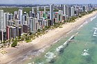
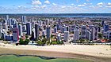
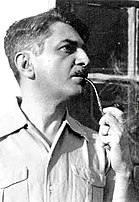

Pernambuco
Pernambuco é uma das 27 unidades federativas do Brasil. Está localizado no centro-leste da região Nordeste e tem como limites os estados da Paraíba (N), do Ceará (NO), de Alagoas (SE), da Bahia (S) e do Piauí (O), além de ser banhado pelo oceano Atlântico (L). Ocupa uma área de 98 149,119 km² (6,57% maior que Portugal). Também fazem parte do seu território os arquipélagos de Fernando de Noronha e São Pedro e São Paulo. Sua capital é Recife e a sede administrativa é o Palácio do Campo das Princesas. O atual governador é Paulo Câmara (PSB). Pernambuco é a sétima unidade federativa mais populosa do Brasil, e possui o décimo maior PIB do país e o maior PIB per capita entre os estados nordestinos.[9] Já sua capital, Recife, é sede da concentração urbana mais rica e populosa do Norte-Nordeste. No interior do estado, as cidades mais importantes são Caruaru e Petrolina.[9][10][11]
Pernambuco foi o primeiro núcleo econômico do Brasil, uma vez que se destacou na exploração do pau-brasil (também referido como pau-de-pernambuco) e foi a primeira parte do país onde a cultura canavieira desenvolveu-se efetivamente. A Capitania de Pernambuco, a mais rica das capitanias da América portuguesa durante o ciclo do açúcar, chegou a atingir o posto de maior produtor mundial da mercadoria.[12][13] No estado ocorreram muitos dos primeiros fatos históricos do Novo Mundo: na Ilha de Itamaracá estabeleceu-se, em 1516, o primeiro "Governador das Partes do Brasil", Pero Capico, que ali construiu o primeiro engenho de açúcar de que se tem notícia na América portuguesa.[14][15] Pernambuco teve ainda participação ativa em diversos episódios da história brasileira: foi palco das Batalhas dos Guararapes, combates decisivos na Insurreição Pernambucana e considerados a origem do Exército Brasileiro; e serviu de berço a movimentos de caráter nativista ou de ideais libertários, como a Guerra dos Mascates, a Revolução Pernambucana, a Confederação do Equador e a Revolução Praieira.[16]
Conhecido por sua ativa e rica cultura popular, Pernambuco é berço de várias manifestações tradicionais, como a capoeira, o coco, o frevo e o maracatu, bem como detentor de um vasto patrimônio histórico, artístico e arquitetônico, sobretudo no que se refere ao período colonial. Em 1970 surgiu no estado o Movimento Armorial, que teve como figura central o escritor Ariano Suassuna. Duas décadas mais tarde apareceu outro importante movimento que se constituiu numa espécie de contraponto ao Armorial: o Manguebeat, cujo maior expoente foi o artista Chico Science.[17][18][19]
Etimologia[editar | editar código-fonte]
.jpg)
A origem do nome Pernambuco é controversa. Alguns estudiosos afirmam que vem da aglutinação dos termos tupis para’nã, que quer dizer “rio grande” ou “mar”, e buka, “buraco”. Assim, Pernambuco seria um “buraco no mar”, referindo-se ao Canal de Santa Cruz na Ilha de Itamaracá ou à abertura que existe nos arrecifes entre Olinda e o Recife.[20] Segundo outros afirmam, era a denominação nas línguas indígenas locais da época do descobrimento para o pau-brasil. Uma terceira hipótese adviria também do tupi, paranãbuku, isto é, “rio comprido”, uma provável alusão ao rio das capivaras, o Capibaribe, já que mapas primitivos assinalam um tal “rio Pernambuco” ao norte do Cabo de Santo Agostinho. Há ainda uma quarta hipótese, aventada pelo pesquisador Jacques Ribemboim, segundo a qual a etimologia teria origem na língua portuguesa: o Canal de Santa Cruz, no início do século XVI, era conhecido como "Boca de Fernão" (referência ao explorador de pau-brasil Fernão de Noronha), e os índios possivelmente o chamavam de algo próximo a "Pernão Boca" ou "Pernambuka", que teria dado origem ao nome Pernambuco.[21][22]
Bento Teixeira, em seu poema Prosopopeia publicado em 1601 — o primeiro poema da literatura brasileira, que conta em estilo épico, inspirado em Camões, as façanhas da família Albuquerque, tendo sido dedicado ao então governador de Pernambuco, Jorge de Albuquerque Coelho —, escreveu uma estrofe na qual conta o significado da palavra Pernambuco.[23] Os habitantes naturais do estado de Pernambuco são denominados pernambucanos.[24]
História[editar | editar código-fonte]
Pré-história e Antiguidade[editar | editar código-fonte]
O Nordeste brasileiro concentra alguns dos mais antigos sítios arqueológicos conhecidos do país, com datação superior a 40 mil anos antes do presente. Na região que hoje corresponde ao estado de Pernambuco, foram identificados vestígios seguros de ocupação humana superiores a 11 mil anos, nas regiões de Chã do Caboclo, em Bom Jardim, e Furna do Estrago, em Brejo da Madre de Deus. Nesta última região, foi descoberta uma importante necrópole pré-histórica, com 125 metros quadrados de área coberta, de onde foram resgatados 83 esqueletos humanos em bom estado de conservação.[25][26]
Dentre os grupos indígenas que habitaram o estado, identificou-se a tradição cultural Itaparica, responsável pela confecção de artefatos líticos lascados há mais de 6 mil anos. No agreste pernambucano, conservam-se pinturas rupestres com data aproximada de 2 mil anos antes do presente, atribuídas à subtradição denominada Cariris velhos. Na época da colonização portuguesa, habitavam o litoral pernambucano os caetés e os tabajaras, já desaparecidos. Nos brejos de altitude do estado ainda é possível encontrar grupos indígenas remanescentes das antigas tradições, como os Pankararu (em Tacaratu) e os Atikum (em Floresta).[26]
Período colonial[editar | editar código-fonte]
O primeiro europeu a chegar ao Brasil foi o navegador espanhol Vicente Yáñez Pinzón, que no dia 26 de janeiro de 1500 desembarcou no Cabo de Santo Agostinho, litoral sul de Pernambuco.[27][14][28] Entretanto, a navegação de navios castelhanos ao longo da costa americana não produziu consequências. A chegada de Pinzón pode ser vista como um simples incidente da expansão marítima espanhola. Portanto, o descobridor do Brasil foi Pedro Álvares Cabral.[29]
Em 1501, ano seguinte ao da chegada dos europeus ao Brasil, o território de Pernambuco, definido pelo Tratado de Tordesilhas como região pertencente à América portuguesa, é explorado pela expedição de Gonçalo Coelho, que teria criado feitorias ao longo da costa da colônia, inclusive, possivelmente, na atual localidade de Igarassu, cuja defesa seria futuramente confiada a Cristóvão Jacques.[16] Em 1516, foi construído no litoral pernambucano o primeiro engenho de açúcar de que se tem notícia na América portuguesa, mais precisamente na Feitoria de Itamaracá, confiada ao administrador colonial Pero Capico — o primeiro "Governador das Partes do Brasil". Em 1526 já figuravam direitos sobre o açúcar de Pernambuco na Alfândega de Lisboa.[33][15]
No ano de 1532, Bertrand d'Ornesan, o barão de Saint Blanchard, tentou estabelecer um posto de comércio em Pernambuco. Com o navio A Peregrina, pertencente ao nobre francês, o capitão Jean Duperet tomou a Feitoria de Igarassu e a fortificou com vários canhões, deixando-a sob o comando de um certo senhor de La Motte. Meses depois, na costa da Andaluzia na Espanha, os portugueses capturaram a embarcação francesa, que estava atulhada com 15 mil toras de pau-brasil, três mil peles de onça, 600 papagaios e 1,8 tonelada de algodão, além de óleos medicinais, pimenta, sementes de algodão e amostras minerais. E no exato instante em que A Peregrina era apreendida no mar Mediterrâneo, o capitão português Pero Lopes de Sousa combatia os franceses em Pernambuco. Retomada a feitoria, os soldados franceses foram presos e La Motte foi enforcado. Após ser informado da missão que A Peregrina realizara em Pernambuco, o rei Dom João III decidiu começar a colonização do Brasil, dividindo o seu território em capitanias hereditárias.[34] Iniciou-se então o povoamento efetivo do território pernambucano. O atual estado de Pernambuco equivale a parte da Capitania de Pernambuco, doada por Dom João III no dia 10 de março de 1534 a Duarte Coelho, e parte da Capitania de Itamaracá, doada a Pero Lopes de Sousa.[16] O Foral da Capitania de Pernambuco serviu de modelo aos forais das demais capitanias do Brasil.[35] Em 1535, Duarte Coelho tomou posse da capitania que lhe foi concedida, a princípio batizada de "Nova Lusitânia", mas que pouco tempo depois recebeu a denominação que mantém até hoje. Em 1537, os povoados de Igarassu e Olinda, estabelecidos no ano da chegada do donatário, foram elevados a vila. Olinda recebeu o status de capital administrativa, e seu porto, habitado por pescadores, deu origem à atual cidade do Recife.[16][36]
As vilas de Olinda e Igarassu, entre os primeiros núcleos de povoamento do Brasil, serviram de ponto de partida para expedições desbravadoras do interior da capitania. Uma dessas expedições, chefiada pelo filho do donatário, Jorge de Albuquerque, penetrou o sertão até o rio São Francisco, assegurando o domínio e expansão do interior do território e combatendo os índios hostis.[16] Duarte Coelho, por sua vez, tratou de instalar grandes engenhos de açúcar no território pernambucano, incentivando também o plantio do algodão. Em pouco tempo, a Capitania de Pernambuco se tornou a principal produtora de açúcar da colônia. Consequentemente, era também a mais próspera e influente das capitanias hereditárias.[12]
Surge em Pernambuco o protótipo da sociedade açucareira dos grandes latifundiários da cana-de-açúcar, que perdurará de forma majoritária nos dois séculos seguintes. O cultivo da cana-de-açúcar adaptou-se facilmente ao clima pernambucano e ao solo massapê. A maior proximidade geográfica de Portugal, barateando o custo do transporte, a abundância do pau-brasil, o cultivo do algodão e os grandes investimentos feitos pelo donatário na fundação de vilas e na pacificação dos índios são outros fatores que ajudam a explicar o progresso da capitania. Discorrendo sobre o centro da economia colonial, o padre Fernão Cardim disse que "em Pernambuco se acha mais vaidade que em Lisboa", opulência que parecia decorrer, como sugere Gabriel Soares de Sousa em 1587, do fato de, então, ser a capitania "tão poderosa (...) que há nela mais de cem homens que têm de mil até cinco mil cruzados de renda, e alguns de oito, dez mil cruzados. Desta terra saíram muitos homens ricos para estes reinos que foram a ela muito pobres".[13][37][38]
A prosperidade de Pernambuco, no entanto, transformou a capitania em um ponto cobiçado por piratas e corsários europeus. Já em 1595, durante a Guerra Anglo-Espanhola, o almirante inglês James Lancaster tomou de assalto o porto do Recife, onde permaneceu por quase um mês pilhando as riquezas transportadas do interior, no episódio conhecido como Saque do Recife. Foi a única expedição de corso da Inglaterra que teve como objetivo principal o Brasil, e representou o mais rico butim da história da navegação de corso do período elisabetano.[39]
Por volta do início do século XVII, a Capitania de Pernambuco era a maior e mais rica área de produção de açúcar do mundo.[12]
Pernambuco e as invasões estrangeiras no Maranhão e na Bahia[editar | editar código-fonte]
,_1673-1675_-_Feliciano_de_Almeida_(Galleria_degli_Uffizi,_Florence).png)
As primeiras décadas do século XVII foram turbulentas na costa do atual Nordeste brasileiro. Em Pernambuco, esforços concentravam-se na expulsão das forças estrangeiras que invadiam o litoral do Brasil.[40][41]
Em 1612, os franceses fundaram em terras maranhenses uma colônia que ficou conhecida como França Equinocial. Jerônimo de Albuquerque, militar de Olinda, foi então incumbido pelo Capitão-mor de Pernambuco, Alexandre de Moura, de expulsar os franceses do Maranhão. Tropas partiram do Recife, e em novembro de 1614 travou-se a batalha final, o Combate de Guaxenduba, com a vitória das forças comandadas por Jerônimo. Seis dias depois foram suspensas as lutas, com tratado assinado pelo comandante francês Daniel de La Touche, Senhor de la Ravardière, e Jerônimo de Albuquerque, no qual la Ravardière se comprometia a entregar o Forte de São Luís em cinco meses, o que efetivamente ocorreu. Face a esta conquista Jerônimo de Albuquerque, por ato do rei Filipe III de Espanha, recebeu oficialmente o sobrenome Maranhão.[41]
Anos depois, no dia 10 de maio de 1624, uma expedição da Companhia Holandesa das Índias Ocidentais atacou e conquistou Salvador. O Governador da Capitania de Pernambuco, Matias de Albuquerque, foi então nomeado Governador-Geral, administrando a colônia a partir de Olinda, e enviando expressivos reforços para a guerrilha sediada no Arraial do Rio Vermelho e no Recôncavo. Contudo, os holandeses só foram dali expulsos no ano seguinte, com a chegada de uma poderosa armada luso-espanhola composta por navios procedentes dos portos de Cádis, de Lisboa e do Recife. Francisco de Moura Rolim, que comandara a frota de caravelas de Pernambuco, tornou-se ainda em 1625 Governador-Geral, nomeado pelo seu antecessor Matias de Albuquerque. Foram, portanto, os primeiros governadores-gerais nascidos no Brasil.[40]
Em meados de 1626, Matias de Albuquerque procurou estabelecer posições fortificadas no porto do Recife a fim de que se pudesse dissuadir a Companhia Holandesa das Índias Ocidentais da ideia empreendida na Bahia.[42]
Invasão holandesa em Pernambuco (1630-1654)[editar | editar código-fonte]
De posse dos recursos obtidos no saque à frota espanhola da prata, a Holanda arma uma nova expedição, desta vez contra Pernambuco, a mais rica de todas as possessões portuguesas. O seu objetivo declarado era o de restaurar o comércio do açúcar com os Países Baixos, proibido pela Coroa da Espanha. Os neerlandeses viam na tomada de Olinda e Recife a oportunidade para impor um duro golpe no reino de Filipe IV.[45]
Em 26 de dezembro de 1629 partia de Cabo Verde em direção a Pernambuco uma extraordinária esquadra com 67 navios e cerca de 7 mil homens, a maior já vista na colônia, sob o comando do almirante Hendrick Lonck. Os holandeses, desembarcando na praia de Pau Amarelo, conquistaram a capitania em fevereiro de 1630 e estabeleceram a colônia Nova Holanda. A frágil resistência portuguesa na passagem do rio Doce foi derrotada, e os holandeses invadiram sem grandes contratempos Olinda. Os moradores, em pânico, fugiram levando o que puderam. Alguns bolsões de contenção foram eliminados, destacando-se a brava luta do capitão André Temudo em defesa da Igreja da Misericórdia. Em poucos dias, Olinda e o seu porto, Recife, foram tomados.[46]
O conde Maurício de Nassau desembarcou na Nieuw Holland, a Nova Holanda, em 1637, acompanhado por uma equipe de arquitetos e engenheiros. Nesse ponto começa a construção de Mauritsstad (atual Recife), que foi dotada de pontes, diques e canais para vencer as condições geográficas locais. O arquiteto Pieter Post foi o responsável pelo traçado da nova cidade e de edifícios como o Palácio de Friburgo, sede do poder de Nassau na Nova Holanda, que tinha um observatório astronômico — o primeiro do Hemisfério Sul —, e abrigou o primeiro farol e o primeiro jardim zoobotânico do continente americano.[47][48] Em 28 de fevereiro de 1643 o Recife (atualmente o bairro do Recife) foi ligado à Cidade Maurícia com a construção da primeira ponte de grande porte da América Latina.[49] Durante o governo de Nassau, Recife foi considerada a mais cosmopolita cidade da América, e tinha a maior comunidade judaica de todo o continente, que construiu, à época, a primeira sinagoga do Novo Mundo, a Kahal Zur Israel, bem como a segunda, a Maguen Abraham.[44] Na Nova Holanda foram cunhadas as primeiras moedas em solo brasileiro: os florins (ouro) e os soldos (prata), que continham a palavra Brasil.[50]
Por diversos motivos, sendo um dos mais importantes a exoneração de Maurício de Nassau do governo da capitania pela Companhia Holandesa das Índias Ocidentais, o povo de Pernambuco se rebelou contra o governo, juntando-se à fraca resistência ainda existente, num movimento denominado Insurreição Pernambucana.[43]
._Hacia_1632_cuadro2-v2-2.jpg)
Insurreição Pernambucana (1645-1654)[editar | editar código-fonte]

Em 15 de maio de 1645, reunidos no Engenho de São João, 18 líderes insurretos pernambucanos assinaram compromisso para lutar contra o domínio holandês na capitania. Com o acordo assinado, começa o contra-ataque à invasão holandesa. A primeira vitória importante dos insurretos se deu no Monte das Tabocas (hoje localizado no município de Vitória de Santo Antão), onde 1,2 mil insurretos mazombos armados de armas de fogo, foices, paus e flechas derrotaram numa emboscada 1 900 holandeses bem armados e bem treinados. O sucesso deu ao líder Antônio Dias Cardoso o apelido de Mestre das Emboscadas. Os holandeses que sobreviveram seguiram para Casa Forte, sendo novamente derrotados pela aliança dos mazombos, índios nativos e escravos negros. Recuaram novamente para as fortificações em Cabo de Santo Agostinho, Pontal de Nazaré, Sirinhaém, Rio Formoso, Porto Calvo e Forte Maurício, sendo sucessivamente derrotados pelos insurretos.[54]
Cercados e isolados pelos rebeldes numa faixa que ficou conhecida como Nova Holanda, indo do Recife a Itamaracá, os invasores começaram a sofrer com a falta de alimentos, o que os levou a atacar plantações de mandioca nas vilas de São Lourenço, Catuma e Tejucupapo. Em 24 de abril de 1646, ocorreu a famosa Batalha de Tejucupapo, onde mulheres camponesas armadas de utensílios agrícolas e armas leves expulsaram os invasores holandeses, humilhando-os definitivamente. Esse fato histórico consolidou-se como a primeira importante participação militar da mulher na defesa do território brasileiro.[54]
Com a chegada gradativa de reforços portugueses, os holandeses por fim foram expulsos em 1654, na segunda Batalha dos Guararapes. A data da primeira das Batalhas dos Guararapes é considerada a origem do Exército Brasileiro.[53]
Tomada a colônia holandesa, os judeus receberam um prazo de três meses para partir ou se converter ao catolicismo. Com medo da fogueira da Inquisição, quase todos venderam o que tinham e deixaram o Recife em 16 navios. Parte da comunidade judaica expulsa de Pernambuco fugiu para Amsterdã, e outra parte se estabeleceu em Nova Iorque. Através deste último grupo a Ilha de Manhattan, atual centro financeiro dos Estados Unidos, conheceu grande desenvolvimento econômico; e descendentes de judeus egressos do Recife tiveram participação ativa na história estadunidense: Gershom Mendes Seixas, aliado de George Washington na Guerra de Independência dos Estados Unidos; seu filho Benjamin Mendes Seixas, fundador da Bolsa de Valores de Nova Iorque; Benjamin Cardozo, juiz da Suprema Corte dos Estados Unidos ligado a Franklin Roosevelt; entre outros.[55][56][57]
Devido à Primeira Guerra Anglo-Neerlandesa, a República Holandesa não pôde auxiliar os holandeses no Brasil. Com o fim da guerra contra os ingleses, a Holanda exige a devolução da colônia em maio de 1654. Sob ameaça de uma nova invasão do Nordeste brasileiro, Portugal firma acordo com os holandeses e os indeniza com 4 milhões de cruzados e duas colônias: o Ceilão (atual Sri Lanka) e as ilhas Molucas (parte da atual Indonésia). Em 6 de agosto de 1661, a Holanda cede formalmente a região ao Império Português através da Paz de Haia.[54][58]
Quilombo dos Palmares[editar | editar código-fonte]
O Quilombo dos Palmares foi um quilombo da era colonial brasileira. Localizava-se na então Capitania de Pernambuco, na serra da Barriga, região hoje pertencente ao município alagoano de União dos Palmares.[60]
Palmares foi o maior dos quilombos do período colonial. Em 1602, já há relatos de sua existência e de envio de expedições pelo governador-geral da Capitania de Pernambuco para pôr fim ao aldeamento. Chegou a abranger uma área de 150 quilômetros de comprimento e 50 quilômetros de largura, situada na Capitania de Pernambuco, entre os atuais estados de Alagoas e Pernambuco, numa região de palmeiras (daí o seu nome).[61]
Sua população teria alcançado um número estimado entre 6 mil e 20 mil pessoas. Tanto pelas proporções como pela resistência prolongada, tornou-se símbolo da resistência escrava. O movimento de fuga dos escravos para a mata vinha de longe, mas a invasão holandesa em Pernambuco constituiu para eles a grande oportunidade. Por quase 70 anos os negros fugitivos viveram com tranquilidade, instalando em Palmares um tipo de estado africano baseado na pequena propriedade e na policultura. Com o fim do domínio holandês em Pernambuco, o quilombo passou a sofrer ataques dos fazendeiros e das autoridades, que viam nele uma ameaça. Enquanto existiu, Palmares atraiu os escravos para a fuga. A resistência dos negros durou muitos anos e a existência do quilombo prolongou-se por quase um século, tendo-se destacado entre seus líderes o rei Ganga Zumba e seu sucessor, Zumbi.[61]
Movimentos nativistas, libertários e separatistas[editar | editar código-fonte]
A Capitania de Pernambuco lutava por reconstruir Recife e Olinda, ambas destruídas com as lutas contra os invasores holandeses. Os senhores de engenho, radicados em Olinda e com reservas quanto ao porto do Recife, acreditavam merecer maiores reconhecimentos da Coroa Portuguesa, pelo contributo na expulsão dos neerlandeses. Portugal, entretanto, mandou para governar a capitania Jerônimo de Mendonça Furtado, um estranho, contrariando assim os interesses de muitos pernambucanos, que se julgavam merecedores de ocupar a função, e não um estrangeiro. Mendonça Furtado era apelidado pejorativamente de Xumberga (ou, nalgumas outras versões, Xumbregas), referência ao Marechal de campo Friedrich Von Schönberg — contratado pelo Conde de Soure como mercenário e que lutara na Guerra da Restauração —,[62] por ter um bigode semelhante ao dele. O estopim do movimento, que culminou com a prisão e deposição do governador, foi a estada, no porto do Recife, de uma esquadra francesa, que por ordem da Corte, foram bem tratados. Os insurgentes fizeram divulgar a notícia de que o governador estaria a serviço dos estrangeiros, que preparavam um ataque à capitania, e seu consequente saque.[63]
Após a invasão holandesa, muitos comerciantes vindos de Portugal — chamados pejorativamente de "mascates" — estabelecem-se no Recife, trazendo prosperidade à vila. O desenvolvimento do Recife foi visto com desconfiança pelos olindenses, em grande parte senhores de engenho em dificuldades econômicas. O conflito de interesses políticos e econômicos entre a nobreza açucareira pernambucana e os novos burgueses deu origem à Guerra dos Mascates, durante a qual o Recife foi palco de combates e cercos. A Guerra dos Mascates é considerada um movimento nativista pela historiografia em história do Brasil.[65]
A Conspiração dos Suassunas foi um projeto de revolta que se registrou em Olinda no alvorecer do século XIX.[66]
Influenciadas pelas ideias do Iluminismo e pela Revolução Francesa, algumas pessoas, entre as quais Manuel Arruda Câmara — membro da Sociedade Literária do Rio de Janeiro —, fundaram em 1796 no município pernambucano de Itambé a primeira loja maçônica do Brasil, Areópago de Itambé, da qual não participavam europeus. As mesmas ideias também eram discutidas por padres e alunos do Seminário de Olinda, fundado pelo bispo Dom José Joaquim da Cunha Azeredo Coutinho em 16 de fevereiro de 1800. Esta instituição teve entre os seus membros o Padre Miguelinho, um dos futuros implicados na Revolução Pernambucana de 1817.[66]
A chamada Revolução Pernambucana, também conhecida como "Revolução dos Padres", foi um movimento emancipacionista que eclodiu no dia 6 de março de 1817 em Pernambuco. Dentre as suas causas, destacam-se a influência das ideias iluministas propagadas pelas sociedades maçônicas, o absolutismo monárquico português e os enormes gastos da Família Real e seu séquito recém-chegados ao Brasil — a Capitania de Pernambuco, então a mais lucrativa da colônia, era obrigada a enviar para o Rio de Janeiro grandes somas de dinheiro para custear salários, comidas, roupas e festas da Corte, o que dificultava o enfrentamento de problemas locais (como a seca ocorrida em 1816) e ocasionava o atraso no pagamento dos soldados, gerando grande descontentamento no povo pernambucano. Foi o único movimento libertário do período de dominação portuguesa que ultrapassou a fase conspiratória e atingiu o processo revolucionário de tomada do poder.[67][68][64]
A repressão foi sangrenta: muitos revoltosos foram arcabuzados ou enforcados com seus corpos esquartejados depois de mortos, enquanto outros morreram na prisão. Também em retaliação, foi desmembrada de Pernambuco, com sanção de Dom João VI, a Comarca das Alagoas, cujos proprietários rurais haviam se mantido fiéis à Coroa, e como recompensa, puderam formar uma capitania independente.[64][70]
Os revolucionários, oriundos de várias partes da colônia, tinham como objetivo principal a conquista da independência do Brasil em relação a Portugal, com a implantação de uma república liberal. O movimento abalou a confiança na construção do império americano sonhado por Dom João, e por este motivo é considerado o precursor da independência conquistada em 1822.[71]
Pernambuco foi a primeira província brasileira a se separar do Reino de Portugal, onze meses antes da proclamação da Independência do Brasil pelo Príncipe Dom Pedro de Orleans e Bragança. No dia 29 de agosto de 1821, teve início um movimento armado contra o governo do capitão general Luís do Rego Barreto — o algoz da Revolução Pernambucana —, culminando com a formação da Junta de Goiana, tornando-se vitorioso com a rendição das tropas portuguesas em capitulação assinada a 5 de outubro do mesmo ano, quando da Convenção de Beberibe, responsável pela expulsão dos exércitos portugueses do território pernambucano.[69][72][73][74] O Movimento Constitucionalista de 1821 é considerado o primeiro episódio da Independência do Brasil.[69]
A Confederação do Equador foi um movimento revolucionário, de caráter separatista e republicano, ocorrido em Pernambuco. É considerada um desdobramento da Revolução Pernambucana, e representou a principal reação contra a tendência absolutista e a política centralizadora do governo do imperador Dom Pedro I (1822-1831), esboçada na Carta Outorgada de 1824, a primeira Constituição do país.[75] Dom Pedro I, mesmo após a Independência do Brasil, permanecia atrelado aos interesses da Coroa Portuguesa, e mostrava-se simpático a uma proposta, feita pelo seu pai Dom João VI, de recriar o Reino Unido com base em fórmula que concederia ao Brasil uma ampla autonomia, porque assim preservaria seus direitos ao trono português. A fórmula, contudo, era vista por muitos pernambucanos como uma tentativa de recolonização.[76] Além disso, a província de Pernambuco se ressentia ao pagar elevadas taxas para o Império, que as justificava como necessárias para levar adiante as guerras provinciais pós-independência (algumas províncias resistiam à separação de Portugal). Pernambuco esperava que a primeira Constituição do Império seria do tipo federalista, e daria autonomia para as províncias resolverem suas questões.[77] A repressão ao movimento foi severa. O imperador pediu empréstimos à Inglaterra e contratou tropas no exterior, que seguiram para o Recife sob o comando de Thomas Cochrane. Os rebeldes foram subjugados, e vários líderes da revolta, como Frei Caneca, foram enforcados ou fuzilados. Também em retaliação, Dom Pedro I desligou do território pernambucano, através de decreto de 7 de julho de 1824, a extensa Comarca do Rio de São Francisco (atual Oeste Baiano), passando-a, inicialmente, para Minas Gerais e, depois, para a Bahia. Esta foi a última porção de terra desmembrada de Pernambuco, impondo à província uma grande redução da extensão territorial, de 250 mil km² para 98 mil km².[70][78]
A Revolução Praieira, também denominada "Insurreição Praieira", "Revolta Praieira" ou simplesmente "Praieira", foi um movimento de caráter liberal e separatista ocorrido na província de Pernambuco entre os anos de 1848 e 1850. A última das revoltas provinciais está ligada às lutas político-partidárias que marcaram o Período Regencial e o início do Segundo Reinado. Sua derrota representou uma demonstração de força do governo de Dom Pedro II (1840-1889).[79] A monarquia brasileira era duramente contestada pelas novas ideias liberais da época. Para além do descontentamento com o governo imperial, grande parte da população pernambucana mostrava-se insatisfeita com a concentração fundiária e do poder político na província, a mais importante do Nordeste. Foi nesse contexto que surgiu o Partido da Praia, criado para opor-se ao Partido Liberal e ao Partido Conservador, ambos dominados por duas famílias poderosas que viviam fazendo acordos políticos entre si. Houve uma série de disputas pelo poder, até que, em 7 de novembro de 1848, iniciou-se a luta armada. Em Olinda, os líderes praieiros lançaram o “Manifesto ao Mundo”, e passaram a lutar contra as tropas do governo imperial, que interveio e pôs fim à maior insurreição ocorrida no Segundo Reinado.[79]
Geografia[editar | editar código-fonte]
Pernambuco é um dos menores estados do país. Apesar disso, possui paisagens variadas: serras, planaltos, brejos, semiaridez e diversificadas praias. As planícies litorâneas têm altitude de até 200 metros, apresentando relevo peneplano (mamelonar), enquanto alguns pontos do Planalto da Borborema ultrapassam os 1 000 metros de altitude. Na margem ocidental do agreste, há a Depressão Sertaneja, uma depressão relativa com altitude média de 400 m que se estende até a margem oriental da Chapada do Araripe. Pernambuco faz divisa com Paraíba e Ceará ao norte, Alagoas e Bahia ao sul, Piauí ao oeste e é banhado o oceano Atlântico ao leste,[80] possuindo 187 km de litoral.[80]
Duas regiões hidrográficas brasileiras abrangem o território pernambucano: São Francisco e Atlântico Nordeste Oriental.[81] São dois os domínios hidrográficos que dividem o estado de Pernambuco. O primeiro compreende pequenas bacias hidrográficas independentes formadas por rios litorâneos que correm diretamente para o oceano Atlântico, formando as bacias dos rios Goiana, Capibaribe, Ipojuca, Beberibe, Camarajibe e Una. O segundo domínio é constituído pela porção pernambucana da bacia do rio São Francisco, que tem como pequenos afluentes, em sua margem esquerda, os rios sertanejos (assim chamados por percorrerem o interior do estado): Moxotó, Pajeú, Ipanema e riacho do Navio. Em Pernambuco, o São Francisco é o principal rio e, com exceção deste e dos rios litorâneos, todos os cursos d'água do estado têm regimes temporários, ou seja, fluem somente na estação chuvosa.[8]
Pernambuco apresenta um dos maiores déficits hídricos do Brasil,[82] possuindo a maior parte do seu território com clima semiárido, caracterizado pela escassez de chuvas, devido à retenção de parte das precipitações pluviais no Planalto da Borborema e às correntes de ar seco provenientes do sul da África. O índice pluviométrico varia de 400 mm e 600 mm/ano, com chuvas concentradas em poucos meses. As temperaturas são elevadas e, em algumas ocasiões, podem ultrapassar os 40 °C. Somente na costa litorânea e na zona da mata o clima é tropical úmido, onde os índices superam 1 500 mm ou até os 2 000 mm anuais, enquanto no agreste, área de transição entre o litoral e o sertão, varia de 500 a 900 mm/ano.[83][8] Nas áreas mais elevadas do agreste, especialmente no Planalto da Borborema, e ainda em outras regiões serranas, é relativamente comum o clima tropical de altitude (Cwa), com temperaturas mais amenas, proporciando a formação de microclimas.[8]
A cobertura vegetal de Pernambuco é composta por floresta tropical perene, floresta tropical semidecídua e caatinga. A floresta tropical (Mata Atlântica) recobria outrora toda a área situada a leste da encosta oriental do Planalto da Borborema, razão pela qual a região passou a denominar-se zona da mata. Atualmente pouco resta da vegetação primitiva, que deu lugar a campos de cultura e pastagens artificiais. A área de transição entre os climas úmido e semiárido é revestida por vegetação florestal peculiar, onde se misturam espécies da floresta atlântica e da caatinga. É a vegetação do agreste, que também dá nome à região. Finalmente, no resto do estado, domina a caatinga, característica do sertão.[8]
Unidades de conservação[editar | editar código-fonte]
A Lei Estadual 13 787/09, de 8 de junho de 2009, instituiu o Sistema Estadual de Unidades de Conservação da Natureza (SEUC). Em 2015, Pernambuco possuía 80 unidades de conservação estaduais: 40 de Proteção Integral (31 Refúgios da Vida Silvestre — RVS; 5 Parques Estaduais — PE; 3 Estações Ecológicas — ESEC; e 1 Monumento Natural — MONA) e 40 de Uso Sustentável (18 Áreas de Proteção Ambiental — APA; 13 Reservas Particulares do Patrimônio Natural — RPPN; 8 Reservas de Floresta Urbana — FURB; e 1 Área de Relevante Interesse Ecológico — ARIE).[84]
O Instituto Chico Mendes de Conservação da Biodiversidade (ICMBio) administra onze unidades de conservação em Pernambuco: dois parques nacionais, uma estação ecológica, uma floresta nacional, três áreas de proteção ambiental, uma reserva extrativista e três reservas biológicas.[85]
As unidades de conservação administradas pelo governo brasileiro no estado são o Parque Nacional do Catimbau (em Buíque, Ibimirim, Sertânia e Tupanatinga), a Área de Proteção Ambiental Costa dos Corais (em Barreiros, Rio Formoso, São José da Coroa Grande e Tamandaré), a Área de Proteção Ambiental Chapada do Araripe (em Araripina, Bodocó, Cedro, Exu, Ipubi, Serrita, Moreilândia e Trindade), a Reserva Extrativista Acaú-Goiana (em Goiana), a Floresta Nacional de Negreiros (em Serrita), a Estação Ecológica do Tapacurá (em São Lourenço da Mata), a Reserva Biológica da Serra Negra (em Floresta, Inajá e Tacaratu), a Reserva Biológica de Pedra Talhada (em Lagoa do Ouro), a Reserva Biológica de Saltinho (em Rio Formoso e Tamandaré) e o Parque Nacional Marinho de Fernando de Noronha (em Fernando de Noronha).[85]
Demografia[editar | editar código-fonte]
Segundo o censo demográfico de 2010 realizado pelo IBGE (última contagem oficial), a população de Pernambuco era de 8 796 448 habitantes, sendo o sétimo estado mais populoso do Brasil, representando 4,7% da população brasileira.[86] Destes, 4 230 681 habitantes eram homens e 4 565 767 habitantes eram mulheres.[86] Ainda segundo o mesmo censo, 7 052 210 habitantes viviam na zona urbana e 1 744 238 na zona rural.[86] O maior aglomerado urbano do estado é a Concentração Urbana do Recife, que além da capital possui mais 14 municípios, e, com 3 741 904 habitantes recenseados, era em 2010 a quarta mais populosa concentração urbana do Brasil, e a mais populosa do Norte-Nordeste.[87]
A densidade demográfica de Pernambuco era de 89,47 hab./km² em 2010, a sexta maior do Brasil. Esse indicador, entretanto, apresentava contrastes pronunciados de acordo com a região analisada, variando de 1 342,86 hab./km² na Região Metropolitana do Recife, até o valor mínimo de 23,2 hab./km² na extinta Mesorregião do São Francisco Pernambucano.[88]
Segundo dados do Programa das Nações Unidas para o Desenvolvimento (PNUD), o Índice de Desenvolvimento Humano (IDH-M) do estado, considerado alto, era de 0,727 em 2017.[7] O município com o maior IDH era Fernando de Noronha (na verdade um distrito estadual), com um valor de 0,788 em 2010; enquanto Manari, situado no extremo Sertão do Moxotó, tinha o menor valor, 0,487. Recife, a capital, possuía um IDH de 0,772.[89]
O nível de desenvolvimento social pernambucano é superior ao dos países menos avançados, mas ainda está abaixo da média brasileira. Não obstante, Pernambuco detém o melhor serviço de coleta de esgoto do Norte, Nordeste e Sul brasileiro e o quinto maior número de médicos por grupo de mil habitantes do Brasil, além de apresentar a menor taxa de mortalidade infantil, a melhor prevalência de segurança alimentar e a maior renda per capita do Nordeste do país.[5][90][91][92][93]
Municípios mais populosos[editar | editar código-fonte]
| Municípios mais populosos de Pernambuco (Estimativa 2021 do Instituto Brasileiro de Geografia e Estatística)[94] | |||||||||||
|---|---|---|---|---|---|---|---|---|---|---|---|
|  Recife  J. dos Guararapes | |||||||||||
| Posição | Localidade | Região intermediária | Pop. | Posição | Localidade | Região intermediária | Pop. | ||||
| 1 | Recife | Recife | 1 661 017 | 11 | Igarassu | Recife | 119 690 | ||||
| 2 | J. dos Guararapes | Recife | 711 330 | 12 | São Lourenço da Mata | Recife | 114 910 | ||||
| 3 | Olinda | Recife | 393 734 | 13 | S. C. do Capibaribe | Caruaru | 111 812 | ||||
| 4 | Caruaru | Caruaru | 369 343 | 14 | Abreu e Lima | Recife | 100 698 | ||||
| 5 | Petrolina | Petrolina | 359 372 | 15 | Ipojuca | Recife | 99 101 | ||||
| 6 | Paulista | Recife | 336 919 | 16 | Serra Talhada | Serra Talhada | 87 467 | ||||
| 7 | C. de Santo Agostinho | Recife | 210 796 | 17 | Carpina | Recife | 85 309 | ||||
| 8 | Camaragibe | Recife | 159 945 | 18 | Gravatá | Caruaru | 85 301 | ||||
| 9 | Garanhuns | Caruaru | 141 347 | 19 | Araripina | Petrolina | 85 131 | ||||
| 10 | Vitória de Santo Antão | Recife | 140 389 | 20 | Goiana | Recife | 80 345 | ||||
Composição étnica[editar | editar código-fonte]
| Cor/Raça | Porcentagem | |||||||||
|---|---|---|---|---|---|---|---|---|---|---|
| Brancos | 36,6% | |||||||||
| Pretos | 5,4% | |||||||||
| Pardos | 57,6% | |||||||||
| Amarelos e Indígenas | 0,3% | |||||||||
| Fonte: IBGE (Dados relativos ao ano de 2009). | ||||||||||
Segundo dados publicados pelo IBGE, relativos ao ano de 2009, a população de Pernambuco está composta por: Pardos (multirraciais) (57,6%); Brancos (36,6%); Pretos (5,4%); e Amarelos e Indígenas (0,3%).[95] De acordo com um estudo genético de 2013, a composição genética da população de Pernambuco é 56,8% europeia, 27,9% africana e 15,3% ameríndia.[96]
A presença de indígenas em Pernambuco data de mais de 10 mil anos. Pinturas rupestres são encontradas em várias áreas do sertão e agreste do estado, sendo as mais conhecidas as do Vale do Catimbau no município de Buíque, agreste pernambucano. Segundo dados da FUNAI, Pernambuco possui cerca de 40 mil índios nos dias atuais.[97]
Foi na Capitania de Pernambuco, entre os anos de 1539 e 1542, que chegaram os primeiros escravos negros do Brasil Colônia, para trabalhar na cultura da cana e na fabricação do açúcar.[98] O número de cativos de origem africana cresceu bastante desde então. Em 1584, 15 mil escravos labutavam em pelo menos 50 engenhos. Esse número subiu para 20 mil escravos em 1600. Já na metade do século XVII a população escrava somava entre 33 e 50 mil pessoas.[99] Pernambuco foi uma das regiões que mais receberam escravos africanos no Brasil. Durante o tráfico negreiro, 824 312 africanos, 17% de todos os escravos trazidos ao Brasil, entraram pelo litoral pernambucano.[100] Dos africanos no estado, 79% eram provenientes do Centro-Oeste africano. Atualmente, situam-se nessa região os países de Angola, República do Congo e República Democrática do Congo.[100]
A miscigenação ocorre em Pernambuco desde os primórdios da colonização. Caso emblemático é o de Jerônimo de Albuquerque, que ganhou o apelido entre os historiadores brasileiros de "Adão Pernambucano". Jerônimo chegou à Capitania de Pernambuco em 1535 com a irmã, Brites de Albuquerque, e o marido dela, o capitão-donatário Duarte Coelho, e logo iniciou uma série de uniões com mulheres indígenas — casando-se, por exemplo, com a princesa Muira Ubi (batizada com o nome cristão de Maria do Espírito Santo Arcoverde), no ritual tabajara —, o que ajudava a selar a paz entre os europeus e os povos nativos. Teve, ainda, filhos com Felipa de Mello, com quem posteriormente casou-se de acordo com as leis da Igreja por exigência da rainha Catarina de Portugal, e, suspeita-se, com as africanas que começavam a chegar à colônia. Não se sabe ao certo quantos filhos ele deixou, mas 36 foram reconhecidos, entre eles nomes notórios como Jerônimo de Albuquerque Maranhão, herói da conquista do Maranhão e fundador da cidade de Natal no Rio Grande do Norte.[101]
Imigração[editar | editar código-fonte]
Duarte Coelho trouxe consigo, para sua capitania, em 1535, o cunhado Jerônimo de Albuquerque, alguns nobres, como Vasco Fernandes de Lucena, e personagens de origens não muito claras, como Brites Mendes de Vasconcelos, a velha, um bebê. Logo em seguida vieram membros de famílias de Viana do Castelo, chegados ao Brasil em sucessivas levas, e que foram o núcleo da nobreza da terra pernambucana, todos aparentados entre si, Rego Barros, Regos Barretos, Velhos Barretos, Salgados de Castro, Marinhos Falcões, Barros Pimentéis, Pais Barretos, Carneiros [da Cunha], Bezerras, Albuquerques, Melos. São comerciantes com foros de nobreza e ascendências conhecidas até o século XIV. Interesses comerciais levaram a Pernambuco, também, Filippo Cavalcanti, patriarca da família Cavalcanti, a qual se entrelaçou com as famílias luso-brasileiras, tendo vários ramos, como a família Suassuna.[103] Segundo o censo nacional de 1920, dos 433.577 portugueses residentes no Brasil, 4.809 estavam em Pernambuco.[104]
Segundo o censo nacional de 1920, dos 219.142 espanhóis vivendo no Brasil, 1.817 estavam em Pernambuco.[104] No final de 2012, 685 espanhóis tinham registro no Consulado Honorário da Espanha no Recife como radicados na capital pernambucana.[105] Também segundo o censo de 1920, dos 558.405 italianos residentes no Brasil, somente 756 estavam em Pernambuco, o que colocava esse estado entre aqueles com menos italianos no país. Na Região Nordeste, o único estado com mais de mil italianos era a Bahia, com 1.448.[104]
Segundo o censo brasileiro de 1920, dos 52.870 alemães residentes no Brasil, 1.550 estavam em Pernambuco.[104] As duas guerras mundiais do século XX impulsionaram a colônia alemã no Recife, que já contou com 1200 imigrantes.[106] Os holandeses, apesar de terem quase majoritariamente partido do Estado, deixaram algumas famílias na capital. Gilberto Freyre, uma das maiores figuras públicas da história do Estado, certa vez escreveu: "Sou, aliás, descendente de espanhóis, tendo também sangue nórdico, holandês, português e, na quarta geração de antepassados, sangue ameríndio, e nenhum africano, admitindo ainda possível raiz árabe e judia."[107]
Religiões[editar | editar código-fonte]

De acordo com os dados do censo de 2010 do IBGE, 5 834 601 habitantes eram católicos (66,33%), nos quais 5 801 397 católicos apostólicos romanos (65,95%), 26 526 católicos apostólicos brasileiros (0,30%) e 6 678 católicos ortodoxos (0,08%); 1 788 973 evangélicos (20,34%), sendo 1 102 485 de origem pentecostal (12,53%), 376 880 de missão (4,28%) e 309 608 não determinado (3,52%); 123 798 espíritas (1,41%); e 43 726 Testemunhas de Jeová (0,50%). Outros 914 954 não tinham religião (10,40%), dentre os quais 10 284 ateus (0,12%) e 5 638 agnósticos (0,06%); 80 591 seguiam outras religiões (0,90%); e 9 805 não souberam ou não declararam (0,12%).[108]
A Igreja Católica em Pernambuco divide-se administrativamente em uma arquidiocese e nove dioceses: a arquidiocese de Olinda e Recife, comandada atualmente pelo arcebispo Dom Antônio Fernando Saburido, e as dioceses de Afogados da Ingazeira, Caruaru, Floresta, Garanhuns, Nazaré, Palmares, Pesqueira, Petrolina e Salgueiro.[109] Os colégios tradicionais pernambucanos são em sua maioria católicos, como o Colégio Damas da Instrução Cristã, o Colégio Marista São Luís e o Liceu Nóbrega de Artes e Ofícios.[108]
Pernambuco é a unidade federativa da Região Nordeste com a maior concentração de evangélicos, tanto em números absolutos quanto em termos proporcionais. 20,34% da população do estado, o que corresponde a mais de 1,78 milhão de pernambucanos, se declara protestante de acordo com o censo de 2010 do IBGE, percentual muito superior aos percentuais encontrados nos demais estados nordestinos.[110]
Entre os cristãos não católicos e não protestantes, destacam-se os Espíritas, as Testemunhas de Jeová e os Santos dos Últimos Dias.[108] O templo afro-brasileiro mais conhecido é o Terreiro do Pai Adão, no Recife.[111]
Os judeus também estão presentes. Algumas das personalidades judias que moraram na capital pernambucana foram a escritora Clarice Lispector, o filósofo Luiz Felipe Pondé, o engenheiro Mário Schenberg, o paisagista Roberto Burle Marx, entre outros.[112] Os budistas, hinduístas e muçulmanos não possuem relevância na população do estado.[108]
Governo e política[editar | editar código-fonte]
.jpg)
.jpg)
O estado de Pernambuco é governado por três poderes: o Executivo, representado pelo Governador do Estado; o Legislativo, representado pela Assembleia Legislativa de Pernambuco; e o Judiciário, representado pelo Tribunal de Justiça do Estado de Pernambuco. Também é permitida a participação popular nas decisões do governo através de referendos e plebiscitos.[113] A atual constituição do estado de Pernambuco foi promulgada em 5 de outubro de 1989, acrescida das alterações resultantes de posteriores emendas constitucionais.[114]
O Poder Executivo pernambucano está centralizado no Governador do Estado, que é eleito em sufrágio universal e voto direto e secreto, pela população, para mandato de quatro anos de duração, podendo ser reeleito para mais um mandato por igual período. Sua sede é o Palácio do Campo das Princesas, construído em 1841 pelo engenheiro Morais Âncora a mando do então governador Francisco do Rego Barros. Vários políticos já passaram pelo Governo de Pernambuco, sendo o mais recente deles Paulo Henrique Saraiva Câmara, economista recifense formado pela Universidade Federal de Pernambuco.[115] Além do governador, há ainda no estado a função de vice-governador, atualmente exercida por Luciana Santos.[115]
O Poder Legislativo pernambucano é unicameral, constituído pela Assembleia Legislativa de Pernambuco, localizado no bairro de Boa Vista, na cidade do Recife. Ela é constituída por 49 deputados, que são eleitos a cada quatro anos. No Congresso Nacional, a representação pernambucana é de três senadores e 25 deputados federais.[114]
O Poder Judiciário é exercido pelos juízes e possui a capacidade e a prerrogativa de julgar, de acordo com as regras constitucionais e leis criadas pelo Poder Legislativo. Atualmente a presidência do Tribunal de Justiça de Pernambuco é exercida pelo desembargador Leopoldo de Arruda Raposo.[116] Representações deste poder estão espalhadas por todo o estado por meio de comarcas.[117]
Divisão político-administrativa[editar | editar código-fonte]
Pernambuco está separado em subdivisões geográficas denominadas regiões geográficas intermediárias e regiões geográficas imediatas, e em subdivisões administrativas denominadas municípios.[118]As regiões geográficas intermediárias foram apresentadas em 2017, com a atualização da divisão regional do Brasil, e correspondem a uma revisão das antigas mesorregiões, que estavam em vigor desde a divisão de 1989. As regiões geográficas imediatas, por sua vez, substituíram as microrregiões. A divisão de 2017 teve o objetivo de abranger as transformações relativas à rede urbana e sua hierarquia ocorridas desde as divisões passadas, devendo ser usada para ações de planejamento e gestão de políticas públicas e para a divulgação de estatísticas e estudos do IBGE.[119]

As regiões geográficas intermediárias compreendem as grandes regiões do estado, que congregam diversos municípios de uma área geográfica. Criado pelo IBGE, esse sistema de divisão tem aplicações importantes na elaboração de políticas públicas e no subsídio ao sistema de decisões quanto à localização de atividades socioeconômicas. As quatro regiões geográficas intermediárias do estado são: a Região Geográfica Intermediária do Recife; a Região Geográfica Intermediária de Caruaru; a Região Geográfica Intermediária de Serra Talhada; e a Região Geográfica Intermediária de Petrolina. Estas regiões intermediárias estão, por sua vez, subdivididas em regiões geográficas imediatas. Pernambuco possui dezoito regiões geográficas imediatas.[120]
Por último, existem os municípios, que são circunscrições territoriais que possuem relativa autonomia e concentram um poder político local, cujo sistema funciona com dois poderes, sendo o Executivo a Prefeitura e o Legislativo a Câmara de Vereadores. Ao total, Pernambuco é dividido 185 municípios, o que o torna a décima primeira unidade da federação com o maior número de municípios. Alguns desses municípios formam conurbações. Oficialmente existem em Pernambuco uma região metropolitana, a do Recife, e uma região integrada de desenvolvimento econômico, o Polo Petrolina e Juazeiro.[118]
Economia[editar | editar código-fonte]
À época do Brasil Colônia, Pernambuco era a mais rica das capitanias, e responsável por mais da metade das exportações brasileiras de açúcar. Sua riqueza foi alvo do interesse de outras nações e, no século XVII, os holandeses se estabelecem no estado.[12] A cana-de-açúcar continua sendo o principal produto agrícola da zona da mata pernambucana, embora o estado não mais seja o maior produtor do país.[122][123] Apesar do declínio do açúcar, Pernambuco se manteve entre as cinco maiores economias estaduais do país até meados da década de 1940: em 1907, o estado tinha a quarta maior produção industrial do Brasil, após Rio de Janeiro, São Paulo e Rio Grande do Sul e à frente de estados como Minas Gerais e Paraná; e em 1939, Pernambuco era ainda a quinta maior economia entre os estados brasileiros, após São Paulo, Rio de Janeiro, Minas Gerais e Rio Grande do Sul.[124]
Após ter ficado estagnado durante a chamada "década perdida" (1985 a 1995), o estado assiste a uma importante mudança em seu perfil econômico, com investimentos nos setores naval, automobilístico, petroquímico, biotecnológico, farmacêutico e de informática, que estão dando novo impulso à sua economia, que vem crescendo acima da média nacional.[125][126][127][128][129] Em 2017, o estado registrou um PIB nominal de 181,551 bilhões de reais, o décimo maior do país, com participação de 2,8% no PIB brasileiro. No mesmo ano, registrou um PIB nominal per capita de 19 164,52 reais, o maior do Nordeste brasileiro.[130]
Pernambuco é atualmente o maior produtor de acerola e goiaba, o segundo maior produtor de uva, o terceiro maior produtor de manga e coco, o terceiro maior polo floricultor e o sétimo maior produtor de cana-de-açúcar do Brasil. Pernambuco é ainda o quarto maior produtor nacional de ovos, o sexto de frangos de corte e a oitava maior bacia leiteira do país.[123][132][133][134][135][136][137][122][138]
Em 2018 Pernambuco um PIB industrial de R$ 32,4 bilhões, equivalente a 2,5% da indústria nacional e empregando mais de 280 mil trabalhadores na indústria. Os principais setores industriais são: Construção (20%), Serviços Industriais de Utilidade Pública, como Energia Elétrica e Água (17%), Alimentos (14,9%), Derivados de petróleo e biocombustíveis (9,3%) e Veículos automotores (8,8%). Estes 5 setores concentram 70% da indústria do estado. [139] A produção industrial pernambucana está entre as maiores do Norte-Nordeste. Destacam-se as indústrias naval, automobilística, química, metalúrgica, de vidros planos, eletroeletrônica, de minerais não metálicos, têxtil e alimentícia. Atualmente, o Complexo Industrial e Portuário de Suape, localizado na área do porto homônimo, Região Metropolitana do Recife, é o principal polo industrial de Pernambuco.[131][140][141]
A capital do estado abriga o Porto Digital, reconhecido como o maior parque tecnológico do Brasil, com mais de 200 empresas, entre elas multinacionais como Accenture, Oracle, ThoughtWorks, Ogilvy, IBM e Microsoft, empregando cerca de seis mil pessoas e respondendo por 3,9% do PIB de Pernambuco.[129][142] O Polo Médico do Recife, considerado o segundo maior do país, atende pacientes do Brasil e do exterior. Os estrangeiros que vão ao Recife em busca de atendimento na área médica, em sua maioria africanos e norte-americanos, visam qualidade nos serviços e preços acessíveis.[143][144]
Turismo[editar | editar código-fonte]
O turismo em Pernambuco oferece diversas atrações históricas, naturais e culturais. As principais localidades turísticas do estado são: Fernando de Noronha, Ipojuca, Tamandaré, Cabo de Santo Agostinho e Itamaracá (Sol e Praia); Bonito, Bezerros e Petrolina (Ecoturismo e Aventura); Buíque (Arqueológico); Garanhuns, Gravatá e Triunfo (Serrano); Olinda, Igarassu, Jaboatão dos Guararapes e Caruaru (Cultural); Vicência, Moreno, Carpina, Goiana e Nazaré da Mata (Rural); e Recife (Cultural, Sol e Praia, Negócios e Saúde).[146] Segundo a pesquisa "Hábitos de Consumo do Turismo Brasileiro 2009", realizada pela Vox Populi, Pernambuco foi o segundo destino turístico preferido dos clientes potenciais brasileiros, já que 11,9% dos turistas optaram pelo estado nas categorias pesquisadas; e segundo a International Congress And Convention Association (ICCA), Pernambuco foi o terceiro maior polo de eventos internacionais do Brasil em 2011.[147][148]
O litoral de Pernambuco tem cerca de 187 km de extensão, entre praias e falésias, zonas urbanas e locais praticamente intocados. Faz divisa ao norte com a Paraíba e ao sul com Alagoas. No litoral sul, as praias mais procuradas são, dentre outras, Porto de Galinhas, Carneiros, Serrambi, Maracaípe, Muro Alto, Calhetas, Paiva e Ilha de Santo Aleixo.[149]
As atrações turísticas do litoral norte também são muito relevantes. As praias mais procuradas são a Ilha de Itamaracá, a Ilhota da Coroa do Avião e a Praia de Maria Farinha, esta última conhecida por abrigar o Veneza Water Park, um dos maiores parques aquáticos do Brasil.[149][150] Construções do período colonial como o Forte Orange na Ilha de Itamaracá e a Igreja dos Santos Cosme e Damião (igreja mais antiga do Brasil segundo o IPHAN) em Igarassu são também muito visitadas por turistas que passam pela região.[32][149]
Além do litoral continental, o estado possui o arquipélago de Fernando de Noronha, um dos destinos nacionais mais conhecidos no exterior.[151] Algumas de suas principais atrações são a Baía do Sancho — eleita a melhor praia do mundo pelos usuários do site de viagens TripAdvisor —, a Baía dos Porcos, a Baía dos Golfinhos, o Morro Dois Irmãos, o Forte de Nossa Senhora dos Remédios de Fernando de Noronha e a Vila dos Remédios. As ilhas são muito procuradas para a prática de mergulho, e o único lugar do oceano Atlântico onde é possível avistar grupos de golfinhos rotadores. O arquipélago foi declarado Patrimônio Natural da Humanidade pela UNESCO.[152][153]
O Planalto da Borborema e os brejos de altitude são opções para os que procuram um clima ameno. Cidades serranas do interior pernambucano como Garanhuns, Triunfo e Gravatá atraem milhares de visitantes. O Festival de Inverno de Garanhuns (FIG), criado em 1991, apresenta uma maratona de atrações nacionais e internacionais de estilos musicais como rock, MPB, blues, jazz, forró e música instrumental nas praças e parques da cidade.[146]
Infraestrutura[editar | editar código-fonte]
Saúde[editar | editar código-fonte]
.jpg)
Pernambuco tem grande tradição na área da medicina. Foi no estado que surgiu o primeiro hospital do Brasil: a Santa Casa de Misericórdia de Olinda, fundada no ano de 1540 e extinta em 1860 com a criação da Santa Casa de Misericórdia do Recife.[154] E foi no Recife que se realizou a primeira operação cesariana do país, em 1817, pelas mãos do médico pernambucano Correia Picanço — fundador das primeiras faculdades de medicina do Brasil e aclamado "Patriarca da Medicina Brasileira".[156]
Em 2009 existiam em Pernambuco 4 149 estabelecimentos hospitalares, com 19 204 leitos.[157] Alguns dos principais hospitais do estado são o Real Hospital Português, o Instituto de Medicina Integral Professor Fernando Figueira (IMIP), o Hospital da Restauração, o Hospital Getúlio Vargas, o Hospital Agamenon Magalhães, o Hospital das Clínicas da Universidade Federal de Pernambuco, o Hospital Ulysses Pernambucano, o Hospital Barão de Lucena, o Hospital Universitário Oswaldo Cruz e o Pronto-Socorro Cardiológico Universitário de Pernambuco.[158] Em 2013, Pernambuco era o quinto estado da Federação em número de médicos por grupo de mil habitantes do Brasil, e sua capital, Recife, o segundo maior número de médicos por grupo de mil habitantes do país, segundo o Conselho Federal de Medicina (CFM).[91]
O Hospital da Restauração é a maior emergência pública e o mais complexo serviço de urgência e trauma do Norte-Nordeste,[159] recebendo pacientes de todo o estado e de estados vizinhos. Referência nas áreas de trauma, neurocirurgia, neurologia, cirurgia geral, clínica médica e ortopedia, possui 704 leitos registrados no Ministério da Saúde (MS) para atender a demanda que lhe é submetida. Em junho de 2010 a antiga Emergência Geral foi desmembrada em três emergências com entradas e espaços independentes: Emergência Pediátrica, Emergência Traumatológica e Emergência Clínica.[160] Pernambuco abriga um dos três bancos de pele do Brasil, estando os outros dois localizados em São Paulo e no Rio Grande do Sul.[161]
Educação[editar | editar código-fonte]
As principais instalações educacionais pernambucanas estão concentradas na capital. A Universidade Federal de Pernambuco (UFPE), principal instituição de ensino superior do estado, foi classificada em 2013 pelo QS World University Rankings como a melhor universidade do Norte-Nordeste e a oitava melhor universidade federal brasileira, bem como a 15ª melhor universidade do país, tendo ocupado a 43ª posição entre as instituições da América Latina e, embora tenha sido ultrapassada pela UFPR com relação ao ano anterior, continua à frente de instituições como a UFSC e a UFBA.[163][164] A UFPE é também a melhor universidade do Norte-Nordeste segundo o Ranking Universitário Folha 2012, além de única universidade dessas duas regiões entre as dez melhores do país.[165]
Pernambuco tem suas principais faculdades e universidades fundadas a partir do século XIX, e algumas se destacam nacionalmente. A centenária Faculdade de Direito do Recife, nascida da transferência da Faculdade de Direito de Olinda e hoje vinculada à UFPE, foi o primeiro curso superior de direito do Brasil, juntamente com o curso de São Paulo, ainda sob governo de Dom Pedro I.[162] Nela importantes nomes da história brasileira estudaram, destacando expoentes como Barão do Rio Branco, Castro Alves, Clóvis Beviláqua, Tobias Barreto, Ruy Barbosa, Joaquim Nabuco, Eusébio de Queirós, Teixeira de Freitas, Raul Pompeia, Nilo Peçanha, Augusto dos Anjos, Epitácio Pessoa, Assis Chateaubriand, José Lins do Rego, Graça Aranha, Pontes de Miranda, dentre inúmeros outros.[166][167][168][169][170] Ainda hoje a festejada faculdade de Direito do Recife, honrando sua tradição, é um centro de excelência no ensino do direito, estando, tanto em nível de graduação como de pós-graduação, entre os cinco melhores cursos jurídicos do Brasil, segundo a OAB e o MEC.[171]
Além da UFPE, outras importantes instituições de ensino superior situadas no estado são: a Universidade Federal Rural de Pernambuco (UFRPE), fundada em 1912 como Escola Superior de Agricultura; a Universidade de Pernambuco, antiga FESP, universidade pública estadual que possui campi em várias cidades do interior do estado; e a Universidade Federal do Vale do São Francisco, primeira universidade federal implantada no sertão nordestino.[172] E o estado também possui destacadas instituições de ensino médio: o Colégio de Aplicação da UFPE foi três vezes eleito a melhor escola pública do Brasil.[173]
Transportes[editar | editar código-fonte]
Pernambuco foi o segundo estado do Brasil a ter uma estrada de ferro, quatro anos após o Rio de Janeiro. Trata-se da primeira seção, de 31 km, da The Recife and São Francisco Railway Company, inaugurada em 1858, sendo a maior do país naquele ano e a primeira administrada por uma companhia do exterior.[175] Menos de uma década depois, Recife se tornou a primeira cidade do mundo a operar locomotivas a vapor construídas especialmente para rodar nas ruas. O sistema, conhecido como "maxambomba" (do inglês machine pump), tinha locomotivas construídas pela Manning Wardle & Co., e foi inaugurado no ano de 1867. Antes, as canoas eram o principal meio de transporte de pessoas e cargas da capital pernambucana e, para os mais abastados, cavalos e carruagens.[176][177]
O itinerário da maxambomba chegou a ter 22 quilômetros de extensão e 20 estações, até que em 1919 foi substituída por bondes elétricos.[176][177] Em 1930, Recife passou a ser a primeira cidade da América do Sul com conexão direita (non-stop) para a Europa, especialmente para a Alemanha, por meio de dirigíveis. A capital pernambucana tem hoje em dia a única estação de atracação de dirigíveis do mundo preservada em sua estrutura original, a Torre do Zeppelin.[178] Atualmente, o estado conta com cobertura de todos os tipos de transporte: aéreo, ferroviário, hidroviário e rodoviário.[179]
Pernambuco possui cinco aeroportos com voos regulares. O Aeroporto Internacional do Recife-Guararapes é o maior e mais movimentado complexo aeroportuário do Norte-Nordeste, com capacidade para 16,5 milhões de passageiros por ano, e um dos mais modernos aeroportos do Brasil.[182][181] O Aeroporto Internacional de Petrolina possui a segunda maior pista de pouso do Nordeste, o que possibilita operações de grandes aviões cargueiros para a exportação de frutas produzidas no Vale do São Francisco.[183] O Aeroporto de Fernando de Noronha atende à demanda turística do arquipélago. Os aeroportos de Caruaru e Serra Talhada passaram a receber voos regulares em 2020, aumentando a conectividade do interior do estado.
O estado também possui dois portos marítimos: Suape, localizado no município de Ipojuca; e Recife, um dos mais antigos do Brasil, que muitos estudiosos afirmam ter dado início à cidade do Recife. Possui ainda um porto fluvial em Petrolina.[184] O Porto de Suape, o mais importante porto pernambucano, é um dos maiores do Brasil, e opera navios nos 365 dias do ano, sem restrições de horário de maré, e dispõe de um sistema de monitoração de atracação de navios a laser que possibilita um controle efetivo e seguro, oferecendo condições técnicas nos padrões dos portos mais importantes do mundo.[185]
A malha rodoviária de Pernambuco é constituída por quatorze rodovias federais, 74 rodovias estaduais e rodovias municipais. As mais importantes são a BR-101, cujo trecho pernambucano é totalmente duplicado, percorre toda costa do estado de norte ao sul, passando pela Grande Recife; e a BR-232, que liga a capital ao interior do estado no sentido leste-oeste, com trecho de 237 km duplicado (Recife a São Caetano), passando por cidades importantes como Vitória de Santo Antão, Gravatá, Caruaru, Belo Jardim, Pesqueira, Arcoverde, Serra Talhada e Salgueiro. A ligação Salgueiro-Petrolina é feita pelas rodovias BR-116, BR-316 e BR-428.[186][187][188] Pernambuco tem a maior malha rodoviária duplicada do Norte-Nordeste de acordo com o Anuário CNT do Transporte 2016, com 462,8 km de rodovias em pista dupla no ano de 2015.[174]
A Transnordestina, com 1 752 km de extensão, é a principal obra ferroviária em andamento no estado, e pretende ligar a cidade de Eliseu Martins, no Piauí, aos portos de Suape e ao Pecém, este no Ceará.[189] O Metrô do Recife, primeiro sistema metroviário do Norte-Nordeste, foi inaugurado em março de 1985, com a linha Werneck-Centro. É operado pela CBTU, e transporta cerca de 400 mil passageiros por dia.[190][191]
Mídia[editar | editar código-fonte]
Os jornais foram a primeira mídia de massa do estado. O Aurora Pernambucana foi o primeiro jornal de Pernambuco e o terceiro publicado no Brasil. A edição nº 1 circulou no dia 27 de março de 1821, em formato de 25 x 17 cm, com quatro páginas, em papel de linho e impresso na Oficina do Trem Nacional de Pernambuco, no Recife.[192] Três grandes jornais pernambucanos são o Diario de Pernambuco, o Jornal do Commercio e a Folha de Pernambuco, sendo o primeiro jornal o mais antigo em circulação na América Latina.[193]
A primeira estação de rádio surgiu no fim da década de 1910. A Rádio Clube de Pernambuco é a mais antiga emissora de rádio do Brasil: realizou sua primeira transmissão radiofônica a partir de um estúdio improvisado na Ponte d'Uchoa, no Recife, em 6 de abril de 1919, tendo à frente o radiotelegrafista Antônio Joaquim Pereira.[194][195]
Pernambuco conta com diversas geradoras, afiliadas e retransmissoras de televisão. Algumas das emissoras — filiais e afiliadas — presentes no estado são: a TV Globo Nordeste (Globo - Recife); a TV Asa Branca (Globo - Caruaru); a TV Grande Rio (Globo - Petrolina); a TV Guararapes (RecordTV - Recife); a TV Jornal Interior (SBT - Caruaru); a TV Jornal (SBT - Recife); a TV Tribuna (Band - Recife); e a TV Pernambuco (TV Brasil - Caruaru/Recife).[196]
Ciência e tecnologia[editar | editar código-fonte]
Mário Schenberg é o físico teórico mais importante do Brasil.[197]
|
Leopoldo Nachbin é o matemático criador da teoria de "Espaços Hewitt-Nachbin".[198]
|
Em 1895 foi criada a Escola de Engenharia de Pernambuco, primeira escola de engenharia fora da região Sudeste.[199] Nela, que logo se tornou uma das principais instituições científicas do país, surgiu uma leva de grandes cientistas brasileiros, como Mário Schenberg, José Leite Lopes e Leopoldo Nachbin, graças à ação catalisadora do professor Luís Freire, conhecido por participar ativamente de movimentos em favor da criação de escolas aptas a formar pesquisadores em matemática e física. Reconhecido como berço de cientistas destacados e nomes notórios das ciências exatas, Pernambuco deu origem ainda a nomes como Paulo Ribenboim, Aron Simis, Samuel MacDowell, Gauss Moutinho Cordeiro, Israel Vainsencher, Josué de Castro, Joaquim Cardozo, Norberto Odebrecht, Cristovam Buarque, Fernando de Souza Barros, Ricardo de Carvalho Ferreira, Leandro do Santíssimo Sacramento, José Tibúrcio Pereira Magalhães, Edson Mororó Moura, Fernando Antonio Figueiredo Cardoso da Silva, Antônio de Queiroz Galvão, João Santos, dentre muitos.[200]
O estado também se destaca no ensino tecnológico, possuindo dois institutos federais: o Instituto Federal de Pernambuco (IFPE) e o Instituto Federal do Sertão Pernambucano (IF-Sertão), com reitorias localizadas, respectivamente, no Recife e em Petrolina.[201]
Seguindo a sua tradição nas ciências exatas, Pernambuco é atualmente um dos estados brasileiros mais destacados na área de tecnologia da informação. O Porto Digital, ambiente de negócios de TI criado no ano 2000 no centro histórico do Recife, é reconhecido pela A.T. Kearney como o maior parque tecnológico do Brasil em faturamento e número de empresas.[129][202][203] Devido à sua relevância no setor, a capital pernambucana é a única cidade brasileira com exceção de São Paulo que abriga edições do evento de tecnologia Campus Party.[204]
O Centro de Informática da Universidade Federal de Pernambuco (CIn-UFPE), considerado um dos principais centros acadêmicos em informática da América Latina e responsável pelos cursos de Ciência da Computação, Sistemas de Informação e Engenharia da Computação, é grande fornecedor de mão de obra especializada em tecnologia para o Porto Digital e para diversas transnacionais do setor de tecnologia,[205][206] inclusive a Microsoft.[205] A UFPE foi uma das cinco instituições de ensino selecionadas em todo o mundo para o programa mundial de pesquisas da Microsoft, o que permitiu o seu acesso ao código-fonte dos componentes do Visual Studio. As outras quatro universidades selecionadas foram a Yale University - Estados Unidos; a Monash University - Austrália; a University of Hull - Inglaterra; além da UNESP, sendo o Brasil o único país que teve duas universidades escolhidas.[207]
Cultura[editar | editar código-fonte]
.jpg)
A cultura pernambucana é uma das culturas mais ativas, ricas e diversificadas do Brasil. Sua base é luso-brasileira, com influências africana, indígena, judaica e holandesa.[209][210] Trata-se de uma cultura bastante particular e típica, mas extremamente variada, constituindo um dos pilares da cultura brasileira. Primeiro núcleo econômico do país, Pernambuco é uma área de povoamento muito antigo.[210]
Dentre as principais festividades estão o Carnaval do Recife, multifacetado, com formas diferentes de carnaval de rua, desfiles de agremiações carnavalescas e apresentações de cantores e conjuntos musicais em palanques específicos. O Recife possui o maior bloco carnavalesco do mundo, o Galo da Madrugada, que se apresenta no sábado de carnaval, ou "Sábado de Zé Pereira". Em 1995 o Galo reuniu mais de um milhão de pessoas, façanha que o incluiu no Guinness World Records.[211]
O Carnaval de Olinda é conhecido mundialmente pelos desfiles dos Bonecos de Olinda, bonecos de mais de dois metros, coloridos e de fácil localização, que saem às ruas junto com os foliões. A festa é realizada no centro histórico da cidade.[212] No interior destaca-se o São João de Caruaru, com diversos polos de animação, shows artísticos, apresentação de grupos folclóricos e regionais e culinária típica, com um público estimado anualmente em 1,5 milhão de pessoas. O evento está no Guinness World Records, na categoria maior festa regional ao ar livre do planeta.[208]
Folclore e gêneros musicais[editar | editar código-fonte]
Várias manifestações folclóricas surgiram em Pernambuco ao longo dos anos. O frevo, uma das principais delas, é símbolo do Carnaval Recife–Olinda, e se caracteriza pelo ritmo musical acelerado e pelos passos de dança que lembram a capoeira. Esse gênero já revelou e influenciou grandes músicos brasileiros. Antes da criação da axé music na década de 1980 o frevo era utilizado também no Carnaval de Salvador. Em cerimônia realizada na cidade de Paris, França, no ano de 2012, a UNESCO anunciou que, aprovado com unanimidade pelos votantes, o frevo foi eleito Patrimônio Cultural Imaterial da Humanidade.[214]
O Maracatu Nação, também conhecido como "Maracatu de Baque Virado", é uma manifestação cultural da música tradicional pernambucana afro-brasileira. É formado por um conjunto musical percussivo que acompanha um cortejo real. Os grupos apresentam um espetáculo repleto de simbologias e marcado pela riqueza estética e pela musicalidade. O momento de maior destaque consiste na saída às ruas para desfiles e apresentações no período carnavalesco.[215][216]
O Maracatu Rural, também referido como "Maracatu de Baque Solto", é outra manifestação cultural de Pernambuco, na qual figuram os conhecidos "caboclos de lança". Distingue-se do Maracatu Nação em organização, personagens e ritmo. O Maracatu "Cambinda Brasileira" é o mais antigo em atividade no país. O Maracatu Rural significa para seus integrantes algo a mais que uma brincadeira: é uma herança secular, motivo de muito orgulho e admiração. O cortejo do Maracatu Rural diferencia-se dos outros maracatus por suas características musicais próprias e pela essência de sua origem refletida no sincretismo de seus personagens.[215]
O Baião, gênero de música e dança, teve como maior expoente o pernambucano Luiz Gonzaga. O ritmo, ao lado de outros como o xote, faz parte do chamado forró. Já o Xaxado, dança típica originária do sertão pernambucano, é exclusivamente masculina e foi divulgada numa vasta área do interior nordestino pelo cangaceiro Lampião e pelos integrantes do seu bando. Também são muito comuns em Pernambuco as Bandas de Pífanos, além de outras músicas e danças oriundas do estado, como o coco, a ciranda, o cavalo-Marinho, os caboclinhos, o pastoril, a embolada, dentre outras manifestações.[217][218]
Nos anos 1990 surgiu em Pernambuco o Manguebeat, movimento da contracultura que mistura ritmos regionais, como o maracatu, com rock, hip hop, funk e música eletrônica.[219]
Artes visuais[editar | editar código-fonte]

O cinema de Pernambuco tem sua história iniciada em 1922, quando o ourives Edson Chagas e o gravador Gentil Roiz se juntam com o propósito de produzir filmes de enredo. Daí, surge a película "Retribuição", que estreou em 1923 com grande sucesso nos cinemas do Recife e que é considerado o primeiro filme de enredo realizado no Nordeste — anteriormente só havia algumas experiências com documentários. A produção cinematográfica local já recebeu inúmeros prêmios nacionais e internacionais e é recordista de indicações e premiações em diversas edições de festivais. Filmes de cineastas e roteiristas pernambucanos como os dramas Baile Perfumado (1996), Amarelo Manga (2002), Cinema, Aspirinas e Urubus (2005), O Som ao Redor (2013), Serra Pelada (2013), Aquarius (2016), ou mesmo romances e comédias como O Auto da Compadecida (1999), Caramuru - A Invenção do Brasil (2001), Lisbela e o Prisioneiro (2003), A Máquina (2005), Fica Comigo Esta Noite (2006), O Bem Amado (2010), entre muitas outras produções, alcançaram grande projeção.[221]
Todos os anos, nas semanas que antecedem a Páscoa, realiza-se o espetáculo da Paixão de Cristo de Nova Jerusalém na Fazenda Nova, distrito de Brejo da Madre de Deus, município do agreste pernambucano. O evento é reconhecido como o maior teatro ao ar livre do mundo. A cidade-teatro de Nova Jerusalém impressiona pela arquitetura: a construção é uma réplica da Judeia sagrada, com lagos artificiais, nove palcos, uma muralha de 3,5 mil metros e 70 torres. Vários atores e atrizes de sucesso da Rede Globo já atuaram em Nova Jerusalém. A Paixão de Cristo existe desde 1951, como espetáculo teatral.[220][222] Pernambuco deu origem ao Mamulengo, nome dado ao teatro de bonecos brasileiro, tido como um dos mais ricos espetáculos populares do país. É uma representação de dramas através de bonecos, em pequeno palco elevado coberto por uma empanada, atrás do qual ficam as pessoas que dão vida e voz aos personagens. Glória do Goitá, município da zona da mata pernambucana, detém o título de "berço do mamulengo".[223]
Pernambuco também se destaca nas artes plásticas e design. São do estado nomes como Romero Britto, Tunga, Francisco Brennand, Marianne Peretti, Cícero Dias, Vicente do Rego Monteiro, Mestre Vitalino, Aloísio Magalhães, Andree Guittcis, Telles Júnior, Abelardo da Hora, Murillo La Greca, Corbiniano Lins, Reynaldo Fonseca, J. Borges, Eudes Mota, Gilvan Samico, Lula Cardoso Ayres, Paulo Bruscky, Galo de Souza, dentre muitos outros. O renomado artista plástico Vik Muniz é filho de pais pernambucanos.[224]
Literatura[editar | editar código-fonte]
|  | ||
Paulo Freire, o maior educador brasileiro e um dos maiores do mundo[225]
|
Gilberto Freyre, um dos maiores sociólogos do século XX[226]
|
Foi em Pernambuco que surgiu o primeiro poema da literatura brasileira: Prosopopeia, de Bento Teixeira. A obra conta em estilo épico, inspirado em Camões, as façanhas da família Albuquerque, tendo sido dedicado ao então governador de Pernambuco, Jorge de Albuquerque Coelho. Prosopopeia foi publicado no ano de 1601.[23]
Outro marco na literatura pernambucana é o livro Historia Naturalis Brasiliae, primeiro tratado de história natural do Brasil, de autoria do médico e naturalista holandês Guilherme Piso, que o concebeu através da observação do jardim zoobotânico do Palácio de Friburgo, residência de Maurício de Nassau no Recife durante o domínio holandês.[48]
Duzentos e cinquenta anos depois de Historia Naturalis Brasiliae, o abolicionista pernambucano Joaquim Nabuco estava concluindo Minha Formação, obra clássica da literatura brasileira.[227] Anos mais tarde é lido, na Semana de Arte Moderna, o poema Os Sapos do recifense Manuel Bandeira, considerado o abre-alas do movimento.[228]
Os literatos pernambucanos são muitos. Alguns deles: João Cabral de Melo Neto, Manuel Bandeira, Nelson Rodrigues, Joaquim Nabuco, Clarice Lispector, Paulo Freire, Gilberto Freyre, Joaquim Cardozo, Josué de Castro, Álvaro Lins, Marcos Vilaça, Martins Júnior, Mauro Mota, Mário Pedrosa, Manuel de Oliveira Lima, Barbosa Lima Sobrinho, Osman Lins, Dantas Barreto, Geraldo Holanda Cavalcanti, Evaldo Cabral de Mello, Evanildo Bechara, Olegário Mariano, João Carneiro de Sousa Bandeira, Adelmar Tavares, dentre diversos outros. Clarice Lispector, ucraniana naturalizada brasileira e um dos maiores nomes da literatura nacional, se declarava pernambucana por ter vivido a maior parte de sua infância e adolescência no Recife.[229]
Culinária[editar | editar código-fonte]
A culinária de Pernambuco foi influenciada diretamente pelas culturas europeia, africana e indígena. Diversas receitas originais provenientes de outros continentes foram adaptadas com ingredientes encontrados com facilidade na região, resultando em combinações únicas de sabores, cores e aromas.[236] Destaca-se pela chamada "doçaria pernambucana", ou seja, os doces desenvolvidos durante os períodos colonial e imperial nos seus engenhos de açúcar como o bolo de rolo, o nego bom e a cartola; e também pelas bebidas e iguarias salgadas descobertas ou provavelmente originadas no estado a exemplo da cachaça, do beiju e da feijoada à brasileira.[231][232][233][234][235][237][238]
Os quitutes mais conhecidos são, entre outros, a tapioca, a feijoada à brasileira, o arrumadinho, o escondidinho, os caldinhos a exemplo dos caldos de sururu, camarão e peixe, a caldeirada, a moqueca pernambucana, a peixada pernambucana, o cozido, o chambaril, o charque à brejeira, o bredo de coco, o feijão de coco, o quibebe, a galinha à cabidela, o angu, o mungunzá salgado, o sarapatel, a buchada e a rabada.[231]
Entre as bebidas mais comuns, merece destaque a cachaça; e entre os doces oriundos de Pernambuco podemos citar o bolo de rolo, o bolo Souza Leão, o bolo barra branca, a cartola e o nego bom. No São João as comidas de milho estão presentes na pamonha, na canjica, no bolo de milho, no mungunzá doce, dentre outras iguarias.[231][236][237] O bolo Souza Leão, o bolo de rolo e a cartola receberam, por lei, status de Patrimônio Cultural Imaterial do Estado de Pernambuco. Já o beiju do Alto da Sé de Olinda, considerado o mais tradicional do Brasil e preservado pela "Associação das Tapioqueiras de Olinda", recebeu o título de patrimônio imaterial da cidade.[230]
Pernambuco é o estado com o maior número de restaurantes estrelados pelo Guia Quatro Rodas no Norte, Nordeste, Centro-Oeste e Sul brasileiro, e o quarto do Brasil, atrás somente de São Paulo, Rio de Janeiro e Minas Gerais. Dezesseis estabelecimentos pernambucanos, que contam com chefs renomados e que vão da cozinha regional às cozinhas lusitana, italiana, francesa, japonesa e peruana, foram agraciados em 2013.[239] O Recife é o terceiro maior polo gastronômico do Brasil segundo a Associação Brasileira de Bares e Restaurantes (Abrasel) — com cerca de 10 mil estabelecimentos —, após Rio de Janeiro e São Paulo.[240]
Espaços culturais[editar | editar código-fonte]

{kind=link}
{kind=link}
{kind=link}
{kind=link}
{kind=link}
{kind=link}
{kind=link}
{kind=link}
{kind=link}
{kind=link}
.jpg){kind=link}
{kind=link}
{kind=link}
{kind=link}
.jpg){kind=link}
.svg){kind=link}
{kind=link}
{kind=link}
{kind=link}
{kind=link}
{kind=link}
{kind=link}
.svg){kind=link}
{kind=link}
{kind=link}
{kind=link}
{kind=link}
{kind=link}
.jpg){kind=link}
{kind=link}
{kind=link}
{kind=link}
.svg){kind=link}
{kind=link}
{kind=link}
.jpg){kind=link}
.jpg){kind=link}
{kind=link}
.jpg){kind=link}
{kind=link}
{kind=link}
{kind=link}
{kind=link}
{kind=link}
{kind=link}
.jpg){kind=link}
{kind=link}
{kind=link}
{kind=link}
{kind=link}
{kind=link}
.jpg){kind=link}
O estado abriga muitos museus, centros culturais e instituições voltadas para a promoção de ações artísticas, como a Fundação Gilberto Freyre, a Oficina Cerâmica Francisco Brennand, o Instituto Ricardo Brennand, o Museu do Homem do Nordeste, o Museu Cais do Sertão, o Paço do Frevo, o Instituto Arqueológico, Histórico e Geográfico Pernambucano, o Gabinete Português de Leitura, o Museu da Abolição, o Museu do Trem, o Museu da Cidade do Recife, o Museu do Estado de Pernambuco, o Museu de Arte Moderna Aloísio Magalhães, o Museu de Arte Contemporânea de Pernambuco, a Caixa Cultural, o Centro Cultural dos Correios, o Santander Cultural, a Academia Pernambucana de Letras, a Academia de Artes e Letras de Pernambuco, a Fundação Joaquim Nabuco, o Museu do Barro e do Forró, o Museu do Sertão, o Teatro de Santa Isabel, dentre outros.[241]
O Museu do Estado de Pernambuco, criado em 1928, possui um grande acervo eclético, com cerca de 12 mil itens abrangendo as áreas de arte, antropologia, história e etnografia.[242] O Museu do Homem do Nordeste, vinculado à Fundação Joaquim Nabuco/Ministério da Educação, é um importante museu antropológico que reúne acervo com cerca de 15 mil peças de heranças culturais da formação do povo nordestino. Conta ainda com uma sala de projeção, o Cinema do Museu, onde são exibidos filmes alternativos, cuja exibição não chega nas grandes salas.[243] O Cais do Sertão, museu interativo e de objetos considerado um dos mais modernos equipamentos culturais do país, foi eleito o 18º melhor museu da América do Sul pelos usuários do site de viagens TripAdvisor.[244]
A Oficina Cerâmica Francisco Brennand é um complexo monumental com 15 km² de área construída — museu de arte e ateliê — criado pelo artista plástico Francisco Brennand, possui acervo com mais de 2 mil peças entre esculturas e pinturas.[245] Já o Instituto Ricardo Brennand (IRB), fundado pelo colecionador e empresário Ricardo Brennand, está sediado em um complexo arquitetônico em estilo medieval, composto por três prédios: Museu Castelo São João, pinacoteca e galeria, circundados por um vasto parque. Abriga um dos maiores acervos de armas brancas do mundo, além de uma coleção permanente de objetos histórico-artísticos de diversas procedências, abrangendo o período que vai da Baixa Idade Média ao século XXI, com forte ênfase na documentação histórica e iconográfica relacionada ao período colonial e ao Brasil Holandês.[246]
_-_Recife_-_Pernambuco_-_Brasil(3).jpg)
Esportes[editar | editar código-fonte]
.jpg)
O esporte mais popular no estado é o futebol. Pernambuco é líder entre os estados do Norte-Nordeste no ranking das federações da CBF, e Recife foi uma das seis sedes da Copa do Mundo de 1950 (única sede nordestina), além de ter sediado a Copa das Confederações de 2013 e a Copa do Mundo de 2014.[248] É, também, eventualmente sede de partidas das Eliminatórias da Copa do Mundo FIFA.[249]
O Campeonato Pernambucano de Futebol, um dos principais torneios estaduais do país, é disputado desde 1915. Os principais times do estado são o Sport Club do Recife, o que mais títulos estaduais possui (42), sendo ainda Campeão Brasileiro de 1987, Campeão da Copa do Brasil de 2008, Vice-Campeão da Copa do Brasil de 1989 e Vice-Campeão da Copa dos Campeões de 2000; o Santa Cruz Futebol Clube, com 29 títulos pernambucanos, além do título Fita Azul do Brasil por ter retornado invicto ao país após uma excursão internacional na qual enfrentou times de futebol como o Paris Saint-Germain e algumas seleções; e o Clube Náutico Capibaribe, um dos clubes mais antigos do Brasil e o primeiro pernambucano a disputar a Libertadores, que detém a marca de mais títulos estaduais consecutivos (Hexacampeão) de um total de 22 conquistas e o título de Vice-Campeão Brasileiro de 1967, além de haver terminado outras 4 vezes entre os 4 primeiros no campeonato brasileiro, sendo 2 em terceiro (1965 e 1966) e 2 em quarto (1961 e 1968), e ter, segundo uma pesquisa do Ibope/Repucom em 2020, a torcida mais fiel do Nordeste. Os três principais clubes pernambucanos estão entre os mais antigos e tradicionais do Brasil.[250][251][252]
{kind=link}
Outros clubes esportivos do estado são o América (com seis títulos estaduais de futebol e o Troféu Nordeste), o Clube Português do Recife, o Central, o Porto, o Ypiranga, o Salgueiro, que em 2019 se tornou o primeiro campeão estadual do interior pernambucano ao bater o Santa Cruz, o Petrolina, o Serra Talhada, o Belo Jardim e o Araripina.[251][253] Os maiores times de Pernambuco possuem estádios próprios. O maior estádio construído é o Estádio do Arruda, pertencente ao Santa Cruz. Destaque ainda para a Ilha do Retiro, pertencente ao Sport, e para o Estádio dos Aflitos, que pertence ao Náutico, sendo que o Náutico mandou os seus jogos entre 2013 e 2018 na Arena de Pernambuco, um moderno estádio construído em São Lourenço da Mata, na Região Metropolitana do Recife, para a Copa do Mundo de 2014.[254]
Pernambuco é também o estado do Norte-Nordeste que mais se destaca em outras modalidades esportivas: é o segundo estado brasileiro em número de títulos nacionais de hóquei, tanto no campeonato masculino quanto no feminino, atrás somente de São Paulo, e o Sport Club do Recife um dos dois únicos clubes brasileiros a conquistar um Campeonato Sul-Americano de Hóquei; e é o único estado fora do Centro-Sul com títulos Brasileiro e Sul-Americano de basquete, obtidos pela equipe feminina do Sport Club do Recife entre 2013 e 2014.[255][256][257]
Feriados[editar | editar código-fonte]
Na tabela a seguir estão os feriados e pontos facultativos previamente agendados em todo o estado de Pernambuco. Na capital, Recife, existem dois feriados municipais: o dia 16 de julho — Dia da Padroeira Nossa Senhora do Carmo; e o dia 8 de dezembro — Dia de Nossa Senhora da Conceição.[258]
Ver também[editar | editar código-fonte]
- Hino de Pernambuco
- Bandeira de Pernambuco
- Data Magna de Pernambuco
- Governadores de Pernambuco
- Municípios de Pernambuco
- Regiões geográficas intermediárias e imediatas de Pernambuco
- Região Metropolitana do Recife
- Ride Petrolina-Juazeiro
Referências
- ↑ «Hoje é feriado em Pernambuco, nome de rua em Beltrão». Jornal de Beltrão. Consultado em 19 de outubro de 2021
- ↑ Instituto Brasileiro de Geografia e Estatística (IBGE). «Área Territorial Oficial - Consulta por Unidade da Federação». Consultado em 29 de agosto de 2021
- ↑ IBGE, IBGE (27 de agosto de 2021). «Estimativas da população residente no Brasil e Unidades da Federação com data de referência em 1º de julho de 2021» (PDF). ibge.gov.br. Consultado em 28 de agosto de 2021
- ↑ «Sistema de Contas Regionais: Brasil 2019» (PDF). Instituto Brasileiro de Geografia e Estatística (IBGE). Consultado em 12 de novembro de 2021
- ↑ Ir para: a b «Tábua completa de mortalidade 2017» (PDF). IBGE. Consultado em 14 de dezembro de 2018
- ↑ Instituto Brasileiro de Geografia e Estatística (IBGE) (2018). «Pesquisa Nacional por Amostra de Domicílios Contínua» (PDF). Consultado em 11 de setembro de 2020
- ↑ Ir para: a b IPEA - Instituto de Pesquisa Econômica Aplicada. «Evolução do IDHM e de Seus Índices Componentes no período de 2012 a 2017» (PDF). Consultado em 18 de abril de 2019
- ↑ Ir para: a b c d e «Plano de Manejo da Reserva Biológica de Serra Negra» (PDF). ICMBio. Consultado em 14 de abril de 2015
- ↑ Ir para: a b «Pernambuco | Cidades e Estados | IBGE». www.ibge.gov.br. Consultado em 8 de dezembro de 2021
- ↑ Grande Enciclopédia , Larousse Cultural, 1998, pp. 4559.
- ↑ «Mais da metade da população vive em 294 arranjos formados por contiguidade urbana e por deslocamentos para trabalho e estudo». IBGE. Consultado em 24 de maio de 2015
- ↑ Ir para: a b c d «Recife — cidade que surgiu do açúcar». Despertai!. Consultado em 17 de outubro de 2016
- ↑ Ir para: a b c d Luiz Geraldo Silva. «A Faina, a Festa e o Rito. Uma etnografia histórica sobre as gentes do mar (sécs XVII ao XIX)». Google Books. p. 122. Consultado em 28 de junho de 2016
- ↑ Ir para: a b «Martín Alonso Pinzón and Vicente Yáñez Pinzón» (em inglês). Encyclopædia Britannica. Consultado em 3 de fevereiro de 2020
- ↑ Ir para: a b «Biografia de Cristóvão Jacques». Ebiografia.com. Consultado em 1 de maio de 2017
- ↑ Ir para: a b c d e «História de Pernambuco». Governo de Pernambuco. Consultado em 15 de dezembro de 2010
- ↑ «Movimento Armorial». InfoEscola. Consultado em 21 de fevereiro de 2019
- ↑ «Capoeira: o que é, origem e história». Estudo Kids. Consultado em 24 de março de 2019
- ↑ «Cultura de Pernambuco». Governo de Pernambuco. Consultado em 30 de junho de 2016
- ↑ Ir para: a b FERREIRA, A. B. H. Novo Dicionário da Língua Portuguesa. Segunda edição. Rio de Janeiro: Nova Fronteira, 1986. p.1 267
- ↑ NAVARRO, E. A. Método Moderno de Tupi Antigo. Terceira edição. São Paulo: Global, 2005. pp. 68-69
- ↑ «Etimologia de "Pernambuco" teria origem no português, e não no tupi, diz pesquisador da UFRPE em livro». UFRPE. Consultado em 2 de novembro de 2016
- ↑ Ir para: a b MONTEIRO, Clóvis - Esboços de história literária - Livraria Acadêmica - 1961 - Rio de Janeiro - pgs.55-57
- ↑ «Veja gentílicos dos Estados do Brasil». UOL. Consultado em 19 de dezembro de 2010
- ↑ Ir para: a b «Sítios arqueológicos de Pernambuco: uma abordagem cultural» (PDF). Unicap. Consultado em 6 de junho de 2015
- ↑ Ir para: a b Gabriela Martin. «Pré-história do Nordeste do Brasil». Google Books. Consultado em 30 de junho de 2015
- ↑ Henri Beuchat. «Manual de arqueología americana» (em espanhol). p. 77. Consultado em 23 de abril de 2019
- ↑ «Pinzón ou Cabral: quem chegou primeiro ao Brasil?». G1. Consultado em 6 de março de 2015
- ↑ «Primeira Missa». Enciclopédia Delta de História do Brasil. [S.l.]: Editora Delta S/A. 1969. p. 1439
- ↑ «Olinda comemora 480 anos com homenagens e muita cultura». iG. Consultado em 4 de junho de 2015. Arquivado do original em 7 de agosto de 2016
- ↑ «Convento de São Francisco». Guia 4 Rodas. Consultado em 4 de junho de 2015
- ↑ Ir para: a b «Igarassu (PE)». IPHAN. Consultado em 5 de junho de 2015
- ↑ «Um pouco de história». IBRAC. Consultado em 29 de outubro de 2016
- ↑ «Capitães do Brasil: A saga dos primeiros colonizadores» (PDF). Editora Sextante. Consultado em 12 de novembro de 2016
- ↑ «O estabelecimento do exclusivo comercial metropolitano e a conformação do antigo sistema colonial no Brasil». SciELO. Consultado em 11 de janeiro de 2017
- ↑ «Foral de Olinda». Prefeitura de Olinda. Consultado em 2 de março de 2015. Arquivado do original em 1 de março de 2015
- ↑ Pêro de Magalhães Gândavo. «Tratado da Terra do Brasil» (PDF). PSB40. Consultado em 28 de junho de 2014. Arquivado do original (PDF) em 16 de abril de 2014
- ↑ Carlos Eugênio Marcondes de Moura, John Hemming. «Ouro Vermelho:A Conquista dos Índios Brasileiros». Google Books. p. 135. Consultado em 28 de junho de 2014
- ↑ Jean Marcel Carvalho França, Sheila Hue. «Piratas no Brasil: As incríveis histórias dos ladrões dos mares que pilharam nosso litoral». Google Livros. p. 92. Consultado em 25 de outubro de 2016
- ↑ Ir para: a b c «Biografia de Matias de Albuquerque». eBiografia. Consultado em 9 de junho de 2017
- ↑ Ir para: a b «A extraordinária história do Brasil - Vol. 1». Google Books. p. 41. Consultado em 12 de junho de 2017
- ↑ Universidade Federal de Campina Grande. «Mathias de Albuquerque». Consultado em 23 de junho de 2012. Arquivado do original em 3 de novembro de 2012
- ↑ Ir para: a b «Maurício de Nassau, o brasileiro». Guia do Estudante. Consultado em 14 de abril de 2015. Arquivado do original em 23 de dezembro de 2014
- ↑ Ir para: a b «Sinagoga do Recife - Kahal Zur Israel». Fundaj. Consultado em 17 de maio de 2015
- ↑ «Invasões Holandesas no Brasil». InfoEscola. Consultado em 14 de abril de 2015
- ↑ «A conquista flamenga». Prefeitura do Recife. Consultado em 14 de abril de 2015
- ↑ «Prelúdio para uma história: ciência e tecnologia no Brasil». Google Books. Consultado em 15 de novembro de 2016
- ↑ Ir para: a b c «Palácio de Friburgo, Recife, PE». Fundaj. Consultado em 19 de abril de 2015
- ↑ «Ponte Maurício de Nassau». Fundaj. Consultado em 17 de maio de 2015
- ↑ «Conheça a história das cédulas e moedas nacionais». Portal Brasil. Consultado em 15 de novembro de 2016
- ↑ «Wars of the Americas: A Chronology of Armed Conflict in the Western Hemisphere, 1492 to the Present, Volume 2» (em inglês). Google Livros. Consultado em 18 de setembro de 2019
- ↑ «Expedición de don Lope de Hoces al Brasil» (em espanhol). Museu do Prado. Consultado em 19 de setembro de 2019
- ↑ Ir para: a b «Batalha dos Guararapes». História Brasileira. Consultado em 28 de julho de 2015
- ↑ Ir para: a b c Instituto Camões (ed.). «A Insurreição pernambucana de 1645» (PDF). Consultado em 15 de abril de 2015
- ↑ «Do Recife a Manhattan». ISTOÉ. Consultado em 28 de julho de 2015
- ↑ «Conexão Recife - Manhattan». Época. Consultado em 28 de julho de 2015
- ↑ «Cemitério de NY guarda história de judeus do Brasil». Estadão. Consultado em 28 de julho de 2015
- ↑ «Insurreição Pernambucana». História Brasileira. Consultado em 17 de novembro de 2016
- ↑ «Afro-descendente recebe medalha». UOL. Consultado em 7 de março de 2015
- ↑ «Cronologia do Quilombo dos Palmares». Folha de S.Paulo. Consultado em 14 de abril de 2015
- ↑ Ir para: a b «Cenário e personagens de um grande drama». Pitoresco.com. Consultado em 14 de abril de 2015
- ↑ Oliveira, Carla Mary S. (29 de agosto de 2007). Territory, Power, and Identities in the Captaincies of Northern Brazil (16th-18th Centuries): Portuguese Studies Review, Vol. 14, No. 1 (Special Issue) (ISSN 1057-1515). [S.l.]: Baywolf Press
- ↑ Souto Maior, A. «Unidade X: O Sentimento Nativista». In: Companhia Editora Nacional. História do Brasil. 1968 6ª ed. São Paulo: [s.n.] pp. 181–200
- ↑ Ir para: a b c Renato Cancian (31 de julho de 2005). «Revolução pernambucana: República em Pernambuco durou 75 dias». Consultado em 1 de março de 2015
- ↑ «Guerra dos Mascates». Brasil Escola. Consultado em 13 de maio de 2015
- ↑ Ir para: a b «Conspiração dos Suassunas». História Brasileira. Consultado em 9 de março de 2015. Arquivado do original em 23 de setembro de 2011
- ↑ «Pernambuco 1817 – A Revolução». Biblioteca Nacional. Consultado em 8 de julho de 2019
- ↑ «Revolução pernambucana de 1817: a "Revolução dos Padres"». Fundação Joaquim Nabuco. Consultado em 16 de abril de 2017
- ↑ Ir para: a b c «A Convenção de Beberibe; o primeiro episódio da independência do Brasil». Google Livros. Consultado em 27 de abril de 2017
- ↑ Ir para: a b «Documentos manuscritos avulsos da Capitania de Pernambuco: Fontes repatriadas». Google Livros. p. 10. Consultado em 24 de março de 2019
- ↑ «Revolução Pernambucana - Considerada o berço da democracia brasileira, revolta completa 200 anos». UOL. Consultado em 3 de julho de 2019
- ↑ «A Confederação do Equador». Histórianet. Consultado em 27 de abril de 2017
- ↑ «Gervásio Pires Ferreira». Fundação Joaquim Nabuco. Consultado em 27 de abril de 2017
- ↑ «Independência do Brasil é tema de passeio turístico neste sábado». Diario de Pernambuco. Consultado em 27 de abril de 2017
- ↑ «Confederação do Equador». Britannica Escola. Consultado em 31 de janeiro de 2017
- ↑ «Proclamada a Confederação do Equador». Ensinar História. Consultado em 13 de julho de 2019
- ↑ «Confederação do Equador: Movimento extrapolou a simples conspiração». UOL. 19 de março de 2009. Consultado em 31 de janeiro de 2017
- ↑ «DECRETO DE 7 DE JULHO DE 1824 - Publicação Original». Portal Câmara dos Deputados. Consultado em 31 de janeiro de 2017
- ↑ Ir para: a b «Revolução Praieira». Britannica Escola Online. Consultado em 20 de outubro de 2016
- ↑ Ir para: a b «Aspectos florísticos da vegetação de restinga no litoral de Pernambuco». SciELO. Consultado em 12 de julho de 2016
- ↑ «Regiões Hidrográficas». Agência Nacional de Águas. Consultado em 21 de julho de 2016
- ↑ Marina Falcão (12 de dezembro de 2016). «Seca ameaça polo de confecção de PE». Consultado em 13 de junho de 2017
- ↑ Alvares, Clayton Alcarde; Stape, José Luiz; Sentelhas, Paulo Cesar; de Moraes Gonçalves, José Leonardo; Sparovek, Gerd (1 de dezembro de 2013). «Köppen's climate classification map for Brazil». Meteorologische Zeitschrift (6): 711–728. doi:10.1127/0941-2948/2013/0507. Consultado em 7 de setembro de 2020
- ↑ «Unidades de Conservação Estaduais - Pernambuco». CPRH - Pernambuco. Consultado em 10 de maio de 2015
- ↑ Ir para: a b «Unidades de Conservação - ICMBio». Instituto Chico Mendes. Consultado em 8 de maio de 2015
- ↑ Ir para: a b c «Sinopse do Censo Demográfico 2010 - Pernambuco». IBGE. Consultado em 13 de maio de 2015
- ↑ IBGE (25 de março de 2015). «Mais da metade da população vive em 294 arranjos formados por contiguidade urbana e por deslocamentos para trabalho e estudo». Consultado em 28 de março de 2015. Cópia arquivada em 28 de março de 2015
- ↑ «Sinopse do Censo Demográfico 2010 - Pernambuco». IBGE. Consultado em 13 de maio de 2015
- ↑ «Atlas do Desenvolvimento Humano no Brasil 2013 - Consulta». PNUD Brasil. Consultado em 29 de julho de 2013
- ↑ «Estados do Brasil por rede de coleta de esgoto». R7. Consultado em 13 de maio de 2015
- ↑ Ir para: a b «Demografia Médica no Brasil 2» (PDF). CFM. Consultado em 9 de março de 2013
- ↑ «PNAD: insegurança alimentar nos domicílios cai de 30,2% em 2009 para 22,6% em 2013». IBGE. 20 de dezembro de 2014. Consultado em 18 de dezembro de 2014
- ↑ «Renda média domiciliar per capita segundo Unidade da Federação - 2014». IBGE. Consultado em 5 de março de 2015
- ↑ «Panorama do estado de Pernambuco». Instituto Brasileiro de Geografia e Estatística (IBGE). Consultado em 28 de agosto de 2021
- ↑ «Síntese de indicadores sociais» (PDF). IBGE. Consultado em 2 de agosto de 2016
- ↑ «Revisiting the Genetic Ancestry of Brazilians Using Autosomal AIM-Indels» (em inglês). United States National Library of Medicine. Consultado em 17 de maio de 2015
- ↑ «Funai em Pernambuco pode fechar as portas». Alepe. Consultado em 17 de maio de 2015
- ↑ «Cronologia do Cultivo do Dendezeiro na Amazônia» (PDF). Embrapa. p. 12. Consultado em 5 de março de 2017
- ↑ «Escravidão e resistência em Pernambuco». CPI-SP. Consultado em 17 de maio de 2015. Arquivado do original em 14 de novembro de 2010
- ↑ Ir para: a b «Regiões de desembarque de africanos no Brasil» (em inglês). Trans-Atlantic Slave Trade. Consultado em 4 de junho de 2015
- ↑ «O "Adão" Pernambucano e a "Capitoa"». HistóriaHoje.com. Consultado em 3 de fevereiro de 2017
- ↑ «Murillo La Greca». Fundaj. Consultado em 15 de abril de 2015
- ↑ Os Herdeiros do poder, Francisco Antonio Doria
- ↑ Ir para: a b c d O papel da migração internacional na evolução da população brasileira (1872 a 1972)
- ↑ «Quase em casa: Fúria terá carinho de comunidade espanhola no Recife»
- ↑ «Cópia arquivada». Consultado em 29 de junho de 2008. Arquivado do original em 3 de março de 2016
- ↑ Biblioteca Virtual Gilberto Freyre, ed. (28 de fevereiro de 1958). «Freyre da Casa Grande». Consultado em 29 de outubro de 2021. Arquivado do original em 24 de novembro de 2007
- ↑ Ir para: a b c d «Tabela 2094 - População residente por cor ou raça e religião». IBGE. Consultado em 23 de julho de 2016
- ↑ «CNBB Nordeste 2». CNBB NE2. Consultado em 17 de maio de 2015
- ↑ «Pernambuco é o Estado com a maior concentração de evangélicos do Nordeste». Jornal do Commercio. Consultado em 24 de maio de 2015
- ↑ «Sítio de Pai Adão / Terreiro de Ilê Obá Ogunté». Fundaj. Consultado em 20 de abril de 2012
- ↑ «Judeus em Pernambuco». Genealogia Freire. Consultado em 20 de abril de 2012
- ↑ «Lei nº 9.868 de 10 de novembro de 1999». STF. 10 de novembro de 1999. Consultado em 7 de abril de 2011
- ↑ Ir para: a b «Constituição do Estado de Pernambuco» (PDF). Governo do Estado de Pernambuco. Consultado em 26 de outubro de 2016
- ↑ Ir para: a b «'Não vamos desistir de Pernambuco', diz Paulo Câmara ao ser empossado». G1. Consultado em 24 de maio de 2015
- ↑ «Novo presidente do TJPE toma posse em cerimônia no Recife». G1. Consultado em 26 de outubro de 2016
- ↑ «Consulta de Comarcas». Tribunal de Justiça de Pernambuco. Consultado em 8 de setembro de 2011
- ↑ Ir para: a b «Caracteristicas da Populacao e dos Domicílios: Resultados do Universo». IBGE. Consultado em 23 de julho de 2016
- ↑ Instituto Brasileiro de Geografia e Estatística (IBGE) (2017). «Divisão Regional do Brasil». Consultado em 17 de agosto de 2017. Cópia arquivada em 17 de agosto de 2017
- ↑ Instituto Brasileiro de Geografia e Estatística (IBGE) (2017). «Divisão Regional do Brasil». Consultado em 9 de fevereiro de 2018. Cópia arquivada em 9 de fevereiro de 2018
- ↑ «Exportações de Pernambuco (2018)». Plataforma DataViva. Consultado em 10 de setembro de 2020
- ↑ Ir para: a b «Vocações». SDEC-PE. Consultado em 31 de maio de 2015
- ↑ Ir para: a b «Goiás é o segundo maior produtor de cana-de-açúcar do país». Goiás Agora. Consultado em 31 de maio de 2015
- ↑ «Contas regionais - Estados brasileiros». IPEAData. Consultado em 4 de junho de 2015
- ↑ «Pernambuco: Economia, Finanças Públicas e Investimentos nos Anos de 1985 a 1996». IPEA. Consultado em 4 de junho de 2015
- ↑ «Pernambuco vive sua revolução industrial». Folha de S.Paulo. Consultado em 31 de maio de 2015
- ↑ «Farmácia ganha destaque com o Polo Farmacoquímico de Pernambuco». NE10. Consultado em 26 de outubro de 2016
- ↑ «PetroquímicaSuape é concluída». SDEC-PE. Consultado em 26 de outubro de 2016
- ↑ Ir para: a b c d «Maior parque tecnológico do país, Recife vira a 'Índia brasileira'». Folha de S.Paulo. Consultado em 31 de maio de 2015
- ↑ «PIB pernambucano superou o nacional em 2017». www.folhape.com.br. Consultado em 8 de dezembro de 2021
- ↑ Ir para: a b «Suape - Histórico». Suape. Consultado em 6 de junho de 2015. Arquivado do original em 4 de março de 2016
- ↑ «Expectativa de aumento de consumo anima produtores de uva». G1. Consultado em 31 de maio de 2015
- ↑ «Exportação impulsiona produção da acerola verde em PE». G1. Consultado em 31 de maio de 2015
- ↑ «Produção Agrícola Municipal 2012». IBGE. Consultado em 31 de maio de 2015
- ↑ «Em PE, boa fase do coco anima os produtores do Vale do São Francisco». G1. Consultado em 5 de junho de 2015
- ↑ «Panorama do agronegócio de flores e plantas ornamentais no Brasil» (PDF). SOBER. Consultado em 31 de maio de 2015
- ↑ «Produtores de Pernambuco lucram ao trocar antigos canaviais pelo cultivo de flores». Revista Veja. Consultado em 31 de maio de 2015
- ↑ «Região Nordeste sofre com maior estiagem dos últimos 40 anos». Globo.com. Consultado em 31 de maio de 2015
- ↑ Perfil da Indústria de Pernambuco
- ↑ «Jeep Renegade tem produção comercial iniciada em Pernambuco». O Globo. Consultado em 31 de maio de 2015
- ↑ «CBVP já produz em dezembro». SDEC-PE. Consultado em 4 de junho de 2015. Arquivado do original em 3 de março de 2016
- ↑ Ir para: a b «Recife concentra maior pólo de informática do país». Porto Digital. Consultado em 31 de maio de 2015. Arquivado do original em 27 de julho de 2011
- ↑ «Polo médico». Jornal do Commercio. Consultado em 8 de março de 2015. Arquivado do original em 26 de dezembro de 2007
- ↑ «Serviços médicos do Recife atraem cada vez mais estrangeiros». G1. Consultado em 24 de maio de 2015
- ↑ «Outras notícias». PortodeGalinhas.com.br. Consultado em 31 de maio de 2015
- ↑ Ir para: a b «Turismo em Pernambuco». Governo de Pernambuco. Consultado em 21 de julho de 2016
- ↑ «Pesquisa revela hábitos de consumo do turista brasileiro». Ministério do Turismo. Consultado em 31 de maio de 2015
- ↑ «Pernambuco é eleito terceiro melhor polo de eventos internacionais do Brasil». Jornal do Commercio. Consultado em 31 de maio de 2015
- ↑ Ir para: a b c «Tudo sobre o turismo em Pernambuco». Diario de Pernambuco. Consultado em 23 de julho de 2016
- ↑ «Piscinas e toboáguas; veja os maiores parques aquáticos do Brasil». Terra. Consultado em 23 de julho de 2016
- ↑ «Erosão e progradação do litoral brasileiro - Pernambuco» (PDF). Ministério do Meio Ambiente. Consultado em 21 de setembro de 2014
- ↑ «Baía do Sancho, em Noronha, é eleita melhor praia do mundo pela 2ª vez». G1. Consultado em 23 de julho de 2016
- ↑ «Fernando de Noronha (PE)». IPHAN. Consultado em 23 de julho de 2016
- ↑ Ir para: a b «Catálogo - ID: 44158». IBGE. Consultado em 8 de junho de 2018
- ↑ «Real Hospital Português - Institucional - Histórico». RHP. Consultado em 27 de maio de 2018
- ↑ «Correia Picanço». Fundaj. Consultado em 31 de maio de 2015
- ↑ «Estados@». IBGE. Consultado em 19 de setembro de 2011
- ↑ «Hospitais». SES-PE. Consultado em 23 de julho de 2016
- ↑ «Emergência da Restauração exige longas esperas por boas notícias». NE10. Consultado em 23 de julho de 2016
- ↑ «Hospital da Restauração». SES-PE. Consultado em 23 de julho de 2016
- ↑ «Especialista defende a criação de pelo menos seis bancos de pele no Brasil». EBC. Consultado em 31 de maio de 2015
- ↑ Ir para: a b «Olinda comemora 184 anos do curso de Direito no Brasil». Prefeitura de Olinda. Consultado em 31 de maio de 2015
- ↑ «QS Latin University Rankings 2013». Top Universities. Consultado em 28 de maio de 2013
- ↑ «Pela 3ª vez, USP lidera ranking das melhores universidades da América Latina». Folha de S.Paulo. Consultado em 28 de maio de 2013
- ↑ «Ranking Universitário Folha». Folha de S.Paulo. Consultado em 20 de setembro de 2012
- ↑ «Recife, nas asas da liberdade!». UFPE. Consultado em 24 de julho de 2016
- ↑ «Falecimento do Professor Afonso Pereira da Silva». Câmara dos Deputados. Consultado em 24 de julho de 2016
- ↑ «Eusébio de Queirós, o precoce jurista e Ministro». Carta Forense. Consultado em 24 de julho de 2016
- ↑ «Augusto dos Anjos». Educação.Globo.com. Consultado em 24 de julho de 2016
- ↑ «José Lins do Rego». UOL. Consultado em 24 de julho de 2016
- ↑ «Os 9 melhores cursos de Direito do Brasil». Guia do Estudante. Consultado em 31 de maio de 2015
- ↑ «Lei nº 13.016, de 21 julho de 2014». Planalto.gov.br. Consultado em 3 de maio de 2015
- ↑ «Excelência e qualidade: CAp da UFPE é a melhor escola pública do país». Globo Educação. Consultado em 3 de julho de 2013
- ↑ Ir para: a b «Evolução da malha rodoviária pavimentada total pista dupla por Região e Unidade da Federação - 2001-2015 — Anuário CNT do Transporte 2016». CNT. Consultado em 24 de junho de 2016. Arquivado do original em 27 de junho de 2016
- ↑ «Cinco Pontas». Estações Ferroviárias do Brasil. Consultado em 22 de abril de 2015
- ↑ Ir para: a b Allen Morrison. «Tramway Pioneers in Latin America» (em inglês). Tramway pioneers. Consultado em 8 de julho de 2015
- ↑ Ir para: a b «No tempo da maxambomba». FAPESP. Consultado em 21 de abril de 2015
- ↑ «Zepelim». Fundaj. Consultado em 6 de março de 2015
- ↑ «Mapa multimodal de Pernambuco» (PDF). Ministério dos Transportes. Consultado em 14 de julho de 2016
- ↑ «Melhor porto, Suape teve investimento de R$ 7 bilhões». Estadão. Consultado em 17 de março de 2013
- ↑ Ir para: a b «Dados Estatísticos». ANAC. 2018. Consultado em 17 de fevereiro de 2019
- ↑ «Recife: muitas novidades no melhor aeroporto do País». Secretaria de Aviação Civil. Consultado em 21 de julho de 2016
- ↑ «Petrolina vai usar cargueiro da Air France para exportar frutas». Codevasf. Consultado em 26 de outubro de 2016
- ↑ «Instituições vinculadas». SDEC-PE. Consultado em 21 de abril de 2015
- ↑ «Suape - Porto e Complexo Industrial». Fundaj. Consultado em 26 de outubro de 2016
- ↑ «Condições das Rodovias - Pernambuco». DNIT. Consultado em 21 de julho de 2016
- ↑ «Rodovias do Estado». DER-PE. Consultado em 21 de julho de 2016
- ↑ «BR-232 terá 273 km que vão a concessão». Jornal do Commercio. Consultado em 21 de julho de 2016
- ↑ «Ferrovia Transnordestina está inacabada após 10 anos de obras». Jornal do Commercio. Consultado em 21 de julho de 2016
- ↑ «Metrô do Recife». Fundaj. Consultado em 21 de julho de 2016
- ↑ «Falhas no metrô do Recife deixaram população sem transporte 30 vezes este ano». Jornal do Commercio. Consultado em 21 de julho de 2016
- ↑ «Aurora Pernambucana (jornal)». Fundaj. Consultado em 19 de maio de 2009
- ↑ «O mais antigo dos jornais». La Insignia. Consultado em 21 de abril de 2015
- ↑ «Rádio Clube AM (PE)». Diários Associados. Consultado em 31 de maio de 2015. Arquivado do original em 11 de março de 2012
- ↑ «O Rádio no Brasil». Museu do Rádio. Consultado em 24 de julho de 2016
- ↑ «Dados». Ministério das Comunicações. Consultado em 24 de julho de 2016
- ↑ «Mário Schenberg - Centro Brasileiro de Pesquisas Físicas» (PDF). CBPF. Consultado em 17 de abril de 2015
- ↑ «Notáveis: Leopoldo Nachbin». Canal Ciência. Consultado em 17 de abril de 2015
- ↑ «Observatório da educação em engenharia» (PDF). UFJF. Consultado em 6 de junho de 2015
- ↑ «Por uma universidade no Rio de Janeiro — Apresentação — Luís Freire». Website de Simon Schwartzman. Consultado em 6 de junho de 2015
- ↑ «Instituições da Rede». Consultado em 18 de julho de 2016
- ↑ «A cidade do Recife é a capital do conhecimento tecnológico do Brasil». Globo.com. Consultado em 21 de junho de 2015
- ↑ «Méritos e reconhecimento». Porto Digital. Consultado em 21 de junho de 2015
- ↑ «Marcada para julho, Campus Party Recife foca em cidades inteligentes». G1. Consultado em 6 de junho de 2015
- ↑ Ir para: a b «Mais quatro alunos do Centro de Informática da UFPE são selecionados para Microsoft». UFPE. Consultado em 17 de abril de 2015
- ↑ «Centro de Informática (CIn) da UFPE: 37 anos de inovação tecnológica». Globo Universidade. Consultado em 6 de junho de 2015
- ↑ «Unesp e UFPE são escolhidas para fazer pesquisas da Microsoft». UOL. Consultado em 17 de abril de 2015
- ↑ Ir para: a b «Na maior festa de São João do mundo, público chega a 1,5 milhão de pessoas». ClicRBS. Consultado em 31 de maio de 2015
- ↑ Isabel Cristina Martins Guillen (2008). «Tradições e traduções na cultura popular em Pernambuco: entre a diversidade e a homogeneidade». Fundaj. Consultado em 13 de dezembro de 2015
- ↑ Ir para: a b «Cultura de Pernambuco». PE.gov.br. Consultado em 12 de dezembro de 2015
- ↑ «O Galo da Madrugada». Fundaj. Consultado em 5 de março de 2015
- ↑ «O frevo em Olinda». Prefeitura de Olinda. Consultado em 13 de julho de 2015. Arquivado do original em 20 de julho de 2011
- ↑ «Recife: O carnaval mais democrático do Brasil encanta com o bloco Galo da Madrugada». Agência EFE. Consultado em 31 de maio de 2015
- ↑ Ir para: a b «Frevo é declarado Patrimônio Imaterial da Humanidade pela Unesco». O Globo. Consultado em 9 de março de 2015
- ↑ Ir para: a b «Maracatus e Cavalo-Marinho recebem título de Patrimônio Cultural Imaterial». G1. Consultado em 20 de abril de 2015
- ↑ «O maracatu». Nova Escola. Consultado em 22 de fevereiro de 2017
- ↑ «Baião». Fundaj. Consultado em 21 de abril de 2015
- ↑ «Xaxado». Fundaj. Consultado em 21 de abril de 2015
- ↑ «Recife - O 'mangue beat'». Folha de S.Paulo. Consultado em 31 de maio de 2015
- ↑ Ir para: a b «Global Igor Rickli, que fará Jesus na Paixão de Cristo, chega ao Recife». G1. Consultado em 3 de maio de 2015
- ↑ Ir para: a b «Dez filmes marcantes do cinema pernambucano». SaraivaConteúdo. Consultado em 17 de julho de 2015
- ↑ «Brejo da Madre de Deus». Paixão de Cristo de Nova Jerusalém. Consultado em 26 de outubro de 2016
- ↑ «CNFCP recebe exposição dos bonecos mamulengos». IPHAN. Consultado em 31 de maio de 2015
- ↑ «Vik Muniz conta como investiga temas que vão da alta cultura a Simpsons». Correio Braziliense. Consultado em 24 de maio de 2015
- ↑ «Paulo Freire, o mentor da educação para a consciência». Nova Escola. Consultado em 18 de abril de 2015. Arquivado do original em 22 de outubro de 2013
- ↑ «Gilberto Freyre digital». ISTOÉ. Consultado em 18 de abril de 2015
- ↑ «Joaquim Nabuco e os abolicionistas britânicos — Correspondência, 1880-1905» (PDF). SciELO. Consultado em 8 de julho de 2016
- ↑ «PGM 102 - Madrigal Melancólica». TV Cultura. Consultado em 8 de junho de 2015
- ↑ «Há 36 anos, a literatura brasileira perdia Clarice Lispector». EBC. Consultado em 18 de abril de 2015
- ↑ Ir para: a b «Patrimônio Imaterial de Pernambuco». Fundaj. Consultado em 31 de maio de 2015
- ↑ Ir para: a b c d «Um pouco de história». IBRAC. Consultado em 18 de novembro de 2016
- ↑ Ir para: a b «Cachaça, 500, tem sabores e aromas diferentes em cada região do país». Folha de S.Paulo. Consultado em 26 de junho de 2017
- ↑ Ir para: a b «A feijoada não é invenção brasileira». Superinteressante. Consultado em 25 de junho de 2017
- ↑ Ir para: a b «O Carapuceiro (jornal)». Fundaj. Consultado em 25 de junho de 2017
- ↑ Ir para: a b «Comida: Conheça a rota da tapioca». Folha de S.Paulo. Consultado em 25 de junho de 2017
- ↑ Ir para: a b «Cozinha Pernambucana». Fundaj. Consultado em 27 de junho de 2015
- ↑ Ir para: a b «Como é feita a cachaça?». Superinteressante. Consultado em 25 de junho de 2017
- ↑ «Via Brasil: Pernambuco, o paraíso dos doces». G1. Consultado em 13 de março de 2017
- ↑ «Chegou o novo Guia Brasil 2013 do Guia Quatro Rodas». Abril.com. Consultado em 31 de maio de 2015. Arquivado do original em 30 de junho de 2015
- ↑ «Terceiro pólo gastronômico do País, Recife agrada a todos». Terra. Consultado em 31 de maio de 2015
- ↑ «Museus». Pernambuco.com. Consultado em 6 de junho de 2015
- ↑ Governo de Pernambuco (ed.). «Museu do Estado de Pernambuco». Consultado em 1 de março de 2015
- ↑ «Museu do Homem do Nordeste». Fundaj. Consultado em 31 de maio de 2015
- ↑ «Brasil tem 12 dos 25 melhores museus da América do Sul, diz pesquisa». UOL. Consultado em 31 de maio de 2016
- ↑ «Oficina Cerâmica Francisco Brennand». TV Brasil. Consultado em 31 de maio de 2016
- ↑ Ir para: a b «Ricardo Brennand: o senhor das armas». Guia do Estudante. Consultado em 28 de julho de 2014
- ↑ «Brasil tem dois museus entre os melhores do mundo segundo turistas». G1. Consultado em 21 de setembro de 2014
- ↑ «Ranking Oficial das Federações da CBF 2014». Campeões do Futebol. Consultado em 17 de maio de 2015
- ↑ «Arena de Pernambuco receberá partida entre Brasil e Peru pelas Eliminatórias da Copa». folhape.com.br. Consultado em 21 de outubro de 2021
- ↑ «CBF volta a reconhecer Sport como único campeão brasileiro de 1987». Globo.com. Consultado em 31 de maio de 2015
- ↑ Ir para: a b «Federação Pernambucana de Futebol». FPF. Consultado em 18 de julho de 2016
- ↑ «Times brasileiros». Brasil Escola. Consultado em 18 de julho de 2016
- ↑ «Títulos do América de Recife». Campeões do Futebol. Consultado em 26 de outubro de 2016
- ↑ «Vídeo: A 900 dias do Mundial, maquete da Cidade da Copa é divulgada». NE10. Consultado em 31 de maio de 2015
- ↑ «Sport é campeão sul-americano de hóquei». Jornal do Commercio. Consultado em 6 de maio de 2013
- ↑ «De virada como na primeira partida, Sport bate Americana e é campeão». Globo.com. Consultado em 6 de maio de 2013
- ↑ «"Leoas" dão bote no fim, e Sport conquista o Sul-Americano feminino». Globo.com. Consultado em 13 de junho de 2014
- ↑ «Pontos Facultativos, Feriados, Festas». Governo de Pernambuco. Consultado em 31 de maio de 2015
Ligações externas[editar | editar código-fonte]
- «Governo de Pernambuco»
- «Assembleia Legislativa de Pernambuco»
- «Poder Judiciário de Pernambuco»
- «História de Pernambuco»
- «Fernando de Noronha»
- «Página do IBGE sobre Pernambuco»
{kind=link}
{kind=link}
{kind=link}
{kind=link}